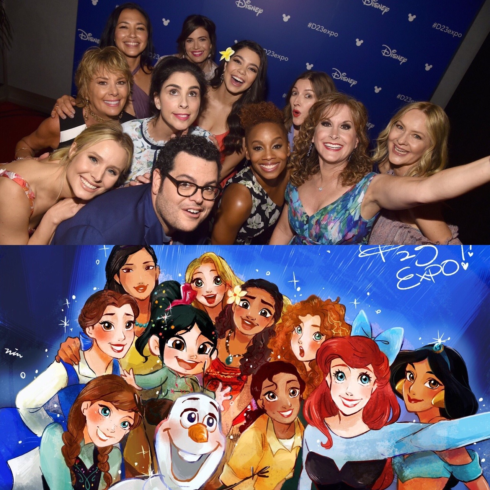
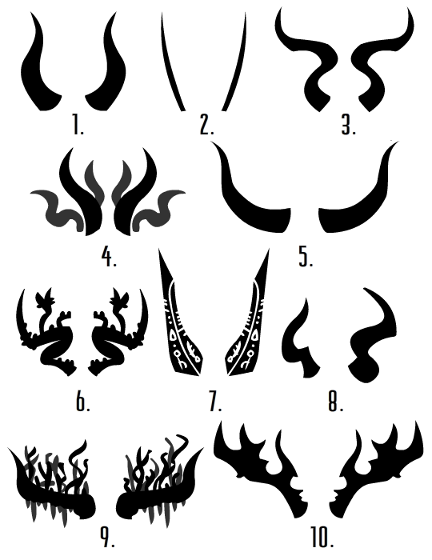

wirehead-wannabe:
It’s telling too that the only serious discussion about whether the hedonic quality of life is negative or positive seems to come from depressed people. Happy people talk down to you about how the question isn’t worth discussing.
It’s telling, indeed, but…mostly not in the way that you seem to mean.
If your value metric consists solely of gauging hedonic experience, then – yes, in many cases it’s going to end up in the red. (And whether or not that’s the case probably has more to do with inborn brain chemistry shit than anything else.)
So why don’t we have a suicide rate closer to 50%? OK, let’s be honest, it’s partly because of cowardice / survival instincts that cause people to cling to life even when they’re miserable. And it’s partly because people are bad prognosticators who often err towards optimism.
But it’s mostly because there aren’t actually that many humans who measure value solely by gauging hedonic experience. Like, it’s not an accident or a mistake that “fill the world with wireheaded bliss junkies” is not a popular policy goal.
At some hedonic set-point, the course of wisdom becomes “stop paying so much attention to your emotional state and focus on attaining whatever things you want.” This does away with the problem nicely on an abstract level, thus producing outside-view satisfaction, and has the delightful side-effect of usually generating additional hedons in the bargain. Cf. “Haita the Shepherd” on the psychological futility of chasing after joy, and the comparative viability of just letting it show up sometimes.
If your baseline emotional state is sufficiently shitty, this becomes extremely difficult, in approximately the same way that it’s difficult for a starving man to act on advice like “wise and happy people don’t obsess over food all the time.” I, uh, I know this one very well.
Even so.
brazenautomaton:
oligopsoneia:
bambamramfan:
I AM SO CONFUSED
This person translates their Punisher fandom into antifa violence?
Have they ever read the Punisher?
Like the Punisher has an extremely clear stance in the current culture wars, and I don’t see how anyone could miss that. Do Franks Castle and Miller need to do a joint endorsement of Trump for it to be more blatant?
Maybe it’s an ironic performance piece showing how the antifa have gone full circle by now.
I detest centrist ideology plenty of times, but wow it’s easy to see where horseshoe theory comes from.
you of all people should have the tools to understand this! we all construct goofy stories about ourselves to say we’re okay, which in a society like our own is going to be a weird and narcissistic one, and the two great dangers at an individual level are failing to do this or, like, becoming an actual literal nazi or whatever
imo if someone wants to be like “the joker represents rebellion against capitalist oppression, i’m working at this homeless shelter because i’m a fucking badass, cops back the fuck off” then good for them. someone with the screenname MarxistFeministBrony69 who means it entirely unironically? good for them. roderick long’s bizarrely benevolent interpretation of rothbard and ayn rand? good for him. these are all examples of killing, eating, and enslaving the enemy’s gods, which is actually pretty cool and badass if u think about it
we all construct goofy stories about ourselves to say we’re okay, which in a society like our own is going to be a weird and narcissistic one
okay, just, tell me how your society is going to somehow be constructed so that the stories people tell to themselves, about themselves, in order to mollify themselves won’t count as your definition of “narcissistic”, when you have already defined “narcissistic” extremely broadly
I don’t presume to speak for @oligopsoneia, but it seems very probable that the answer here is something like:
“Of course those stories are going to be narcissistic. Is that a problem?”
bambamramfan:
balioc:
bambamramfan:
fireleaptfromhousetohouse:
shieldfoss:
argumate:
how about next time we let the elves be Jewish and the dwarves can be, I don’t know, Jamaican.
Dwarves => Japanese, all clan honor and axes folded in 1 million layers.
I keep telling you guys, they’re Texan oilmen. Take a look at Yosemite Sam sometime and give me one important way in which he differs from the average fantasy dwarf.
It’s amazing the way focus on multiculturalism over class has ruined people’s ability to read art.
Elves are upper class.
Dwarves are working class.
There are traits they have that are references to more ethnic-based cultures, but that’s because our fantasy of those cultures themselves are just projections about class. Ie, the elegant, graceful Easterners are a fantasy about their richness that got projected onto Elves, just as much as stereotypes about Wales and Scotland are based on their lower class relative to England.
Next, people will be like “Uh, vampires are European and zombies are African?”
At least with regard to the Tolkein legendarium (and other genre source texts insofar as they reflect their Tolkein influences), this schema does not work at all.
Dwarves in particular have all the characteristics of an endogamous ethnic minority. They are extremely clannish and xenophobic; their general attitude towards “normal” sorts of people is “we have no use for you;” they are famous for having secrets and customs (crafting-arts, language, magic, etc.) that are powerful but not available to outsiders; they are, importantly when it comes to class analysis, noteworthy primarily for being stupendously wealthy.
Not to mention their folkloric roots in Nibelung-type dwarves, who don’t resemble the “working class” even a little, or for that matter Tolkein’s explicit commentary that various aspects of his dwarf-lore were Judaism-inspired.
The argument makes a little more sense with regard to elves, but even so, they’re too insular and self-sufficient to work very well as stand-ins for the upper-class. They function way better as “Tolkein’s image of an idealized heroic society” than anything more allegorical.
Also, uh…
Next, people will be like “Uh, vampires are European and zombies are African?”
So, OK, not actually African as such. But vampires are creatures of European myth, and zombies are black-by-way-of-Haiti. Their origins certainly don’t reflect everything important to the way we use them now, but they can certainly still be made to matter.
Your favorite metaphors aren’t the only metaphors. Literature is wide.
I was not being that literal, though I understand the misinterpretation (given that I was being that literal with vampires and zombies.) Dwarves obviously also have secret hordes of mineral wealth, while elves are often portrayed as living off the land, etc.
But it’s that dwarves are less based on a _specific culture_ than a particular fantasy of a culture that we often project onto certain ethnic groups. And that is the lower-middle class, insular ethnic groups who often make up immigrant communities: Jews, the Scottish, Eastern Europeans. They have stereotypes of being obsessed with money, crude, hairy, drunkards, relegated to dark places, and have their obscure but sacred hierarchies. The many jokes in Pratchett about dwarves are very obvious as ethnic jokes - not about one specific ethnic group, but about the sort of groups most ethnic jokes were told about.
(The Texas oilmen are famous for affecting a working class attitude, in comparison to those effect Easterners from New Yahk City.)
And elves are the other sort of foreigners, the ones not dependent on us, so therefore scary for being superior to and isolated from us. This fits in with a lot of orientalist fantasy, which is why they make an upper-class projection: they are graceful, full of ancient wisdom, long-lived, and wary of how we will dirty up their place.
You can see it as a spectrum, with our image of ourselves as the normal, healthy non-stereotype in the middle. This is why they are projects, different extremes we see our “normal” culture can choose between.
Now this isn’t solely about economic wealth. Those immigrant communities can have some rather rich members, but it’s like saying a plumber earns more than a graduate research assistant. We still know what class each is usually a part of.
Your favorite metaphors aren’t the only metaphors. Literature is wide.
That line seems silly. It’s the multicultural focused people who are trying to find “what culture are the Elves based on?” I’m saying it’s impossible to reconcile all the stereotypes about Elves with just one specific culture, and that they are a diverse set of stories united by a generic framework. And that framework is… how we see the foreign Other who we fear sneers down at us (as compared the Dwarven other we sneer down at.) A class fantasy.
It’s a bit absurd to argue about the specific positions of people not involved in this discussion, but “I would like to see some Jewish elves” != “elves are only and forever a metaphor for $PARTICULAR_ETHNIC_GROUP.” You will of course find people who argue for that latter kind of thing, and they are of course very silly.
Your “generic framework” is still a pretty specific, limited thing. Tolkein elves != Pratchett elves != WoW elves != M:tG elves, and in each case the driving metaphor is pretty different. (Especially in the last case, where they’re tribal primitivists…)
bambamramfan:
fireleaptfromhousetohouse:
shieldfoss:
argumate:
how about next time we let the elves be Jewish and the dwarves can be, I don’t know, Jamaican.
Dwarves => Japanese, all clan honor and axes folded in 1 million layers.
I keep telling you guys, they’re Texan oilmen. Take a look at Yosemite Sam sometime and give me one important way in which he differs from the average fantasy dwarf.
It’s amazing the way focus on multiculturalism over class has ruined people’s ability to read art.
Elves are upper class.
Dwarves are working class.
There are traits they have that are references to more ethnic-based cultures, but that’s because our fantasy of those cultures themselves are just projections about class. Ie, the elegant, graceful Easterners are a fantasy about their richness that got projected onto Elves, just as much as stereotypes about Wales and Scotland are based on their lower class relative to England.
Next, people will be like “Uh, vampires are European and zombies are African?”
At least with regard to the Tolkein legendarium (and other genre source texts insofar as they reflect their Tolkein influences), this schema does not work at all.
Dwarves in particular have all the characteristics of an endogamous ethnic minority. They are extremely clannish and xenophobic; their general attitude towards “normal” sorts of people is “we have no use for you;” they are famous for having secrets and customs (crafting-arts, language, magic, etc.) that are powerful but not available to outsiders; they are, importantly when it comes to class analysis, noteworthy primarily for being stupendously wealthy.
Not to mention their folkloric roots in Nibelung-type dwarves, who don’t resemble the “working class” even a little, or for that matter Tolkein’s explicit commentary that various aspects of his dwarf-lore were Judaism-inspired.
The argument makes a little more sense with regard to elves, but even so, they’re too insular and self-sufficient to work very well as stand-ins for the upper-class. They function way better as “Tolkein’s image of an idealized heroic society” than anything more allegorical.
Also, uh…
Next, people will be like “Uh, vampires are European and zombies are African?”
So, OK, not actually African as such. But vampires are creatures of European myth, and zombies are black-by-way-of-Haiti. Their origins certainly don’t reflect everything important to the way we use them now, but they can certainly still be made to matter.
Your favorite metaphors aren’t the only metaphors. Literature is wide.
brazenautomaton:
avocadosandcats:
as it turns out, contra dance is super great
does it involve the spread shot?
“I’ve never heard of this Contra dancing thing. What are the steps?”
“Well, first, you go up. Then you go up again. Then down, down again, to the left, to the right…”
maybe-a-lizard:
jadagul:
balioc:
jadagul:
bambamramfan:
anosognosic:
balioc:
azdoine:
balioc:
Under modern post-industrial bureaucratized high-tech capitalism, it is less rewarding than ever before to be a subject. No one really has agency, these days, even the people who really seem like they should. Every decision is usurped by external rules and dependencies, every little fiefdom has a million stakeholders, every individual is ultimately in thrall to some faceless behemoth of a system.
Under modern post-industrial bureaucratized high-tech capitalism, it is more rewarding than ever before to be an object. Commodification and cultural churn mean that there’s an eternal seller’s market for cool things, which is great if you primarily construct yourself as a cool thing in search of a buyer/audience. Loosening social norms mean that you can be pretty much any kind of cool thing you want. Individual freedoms, combined with communications technology, mean that you have a nigh-infinite range of potential buyers/audiences available for you.
This alone accounts for a lot of the widespread weird stuff going on with gender these days.
#shitpost #kidding on the square
Okay, bearing in mind that I might be butting in without context (I certainly am butting in, just a bit), and bearing in mind that you might be completely joking… I actually have no idea why you arrived at this conclusion.
Having come to your tumblr from your wordpress blog (where you wrote eloquently and amazingly about the importance and significance of identity-narratives), I don’t understand why you single out contemporary gender weirdness (which is “at worst” just an influx of gender-based identity-narratives) as having this unique cause in post-industrial capitalism.
Which is to say, if post-industrial capitalism has explanatory power for gender-based identity narratives, I don’t see why the same explanatory power can’t be applied to understand all kinds of other contemporary and non-conventional identity-narratives. If gender-based identity-narratives are tied to being an object over being a subject (I’m not sure they do involve being an object; but I’m also not sure that I understand you correctly), I don’t see why other identity-narratives wouldn’t be (or couldn’t be) the same.
I especially don’t think that non-conventional gender-identity-narratives are particularly and specifically rewarding in money or capital, even if they might be occasionally rewarding in social capital (and I don’t think they are generally rewarding in social capital, most of all for people in the lower and middle classes, but full disclosure: I am a binary trans woman, so I’m extremely biased).
(Full full disclosure: I came to your wordpress from your essay on Hastur in Exploring Egregores, and I came to Exploring Egregores from lurking in various rationalist online spaces, I don’t recall the details.)
Anyways, I hope this post finds you well and that I’m not ruining your joke.
First off: thanks very much for your kind words.
That said, sure, let’s unpack that last sentence in a little more detail rather than just throwing it out there as a snarky shitpost. Ain’t nothing wrong with taking things seriously and asking serious questions.
(NB: “kidding on the square,” as defined by Al Franken, means, “it’s just a joke! except that it’s not really just a joke.”)
contemporary gender weirdness (which is “at worst” just an influx of gender-based identity-narratives)
For starters, I think you’re not parsing that phrase the way I meant it. This isn’t just “now people are sometimes trans or nonbinary or V O I D G E N D E R or whatever.” (Especially given that, even if the contemporary constructions are new, gender fuckery of that approximate kind is as old as dirt. See, e.g., Nero.)
This is the whole damn insane discourse surrounding gender issues and gender relations. This is the fact that, if you take their accounts seriously, the feminist center-left and the traditionalist center-right and the Weird Left and the Weird Right all seem to be living in completely different universes.
In very broad-brush and simplistic terms:
Traditional masculinity (to the extent that it’s a thing at all) is mostly about Being a Subject, and provides lots of tools that make subject-hood work better. It pushes you to take action, to make decisions, to possess things and people and take pleasure in it.
Traditional femininity is mostly about Being an Object, and provides lots of tools that make object-hood work better. It pushes you to construct yourself into something desirable and compelling, to seek out appreciation, to be possessed and take pleasure in it.
People vary in the utility they get from subject-hood and object-hood. Probably everyone needs both to some substantial extent.
To some extent, identity-building always pushes towards the object side of the equation. It’s about being rather than doing; it involves saying, “witness me! appreciate me!” The pure Platonic subject, like Doom Guy or the main character of an old-school dating sim, has no actual traits that can be perceived (and thus nothing on which to hang an identity); he is simply a perspective-that-does-things, a blank empty force of happening in the world.
But – a given identity, depending on its content, can lean subject-ward or lean object-ward. This often gets finicky, but stupidly blunt-edged examples will illustrate the principle well enough…you can identify as a Man of Action who explores and conquers, you can identify as a Beautiful Concubine whom everyone wants to have, and those things turn out to work pretty differently.
A lot of the most classic, most central feminist thinking devolves to “we’ve set up a society where man = subject and woman = object, but being a subject is awesome and being an object sucks, so this is very unfair.”
And, like, it’s not hard to see where that comes from, especially if you’re in a setup where your designated Subject People have the power to get the things they want – rewarding work, freedom to make personal decisions that matter, ownership of desirable Object People – and your designated Object People mostly have to fit themselves into a particular narrow mold and deal with whichever random Subject People take control of them.
But that was then, and this is now.
So OK. Now we’re in a situation where being a subject just doesn’t work very well, for anyone. Even powerful people don’t really have power. Even free people aren’t really free. But, on the flipside, being an object is better than it’s ever been; you’ve got a million skillion different cultural elements that you can mix-and-match into your very favoritest kind of Display, and you have the whole wide internet in which to hunt down the exact people who will best appreciate your fabulous self, etc.
Before anything else: this turbo-boosts identity logic across the board. Even someone who would have been a pure-strain Subject Person thirty years ago, a Manly Man who loves power and decision-making and ownership, is now going to be comparatively less interested in real subjectivity (wielding power, making decisions, enjoying ownership) and more interested in being an, er, object-defined-by-subjectivity. A smaller proportion of his Psychic Rewards from Manliness is going to to come out of actual manly action, since actual manly action has been crippled all to hell, and a correspondingly greater portion is going to come out of the sheer fact of being powerful and decisive and so on, and out of having other people perceive him as such.
Or, in other words – even a billionaire CEO doesn’t really get to feel like he has untrammeled autonomous command over anything these days, but he sure gets to listen to a lot of people talking about what an awesome genius he is.
So where does this leave us in terms of gender?
Well, a bunch of women who were all excited to get their hands on the Fabled Power of Subjectivity are learning that it’s not as cool as they imagined it would be, which is partly because it was never as cool as they imagined it would be, but mostly because things have changed since the days when their dads were tiny patriarchs and being rich meant never having to say you’re sorry. A lot of them, I’d wager, have an intuitive sense that they’ve been cheated somehow – that they’re not really getting the same deal that men have, that the men are in fact somehow hoarding all the Subjectivity Awesomeness via Sexist Black Magic.
And a bunch of men are growing up with the intuitive understanding that Real Success consists of being an extremely desirable object, and they are furious that the world does not actually contain any way for them to pull this off. A dude needs tremendous talent, and tremendous luck, to be as good an object as your average twenty-year-old girl in a tight t-shirt. So they mutter dark mutterings about how women have all the good things in the world, and it drives them insane, but it’s not like they’re totally making it up.
At the very least, this gives you 4chan-style being-a-cute-girl envy, even in the absence of whatever brain wiring gives you “standard” trans-ness.
I kinda suspect it gives you a lot more.
Interesting discussion, but
being a subject just doesn’t work very well, for anyone. Even powerful people don’t really have power. Even free people aren’t really free.
This is an incredibly distorted view of things. Maybe it’s that we’ve grown so focused on national or international news which the individual can hardly hope to affect, or maybe it’s that the internet tends to concentrate young, depressed, chronically ill and/or disabled people, as well as academics, all of whom are in various ways not what we might call people of action, broadly speaking. Or maybe it’s that certain sectors of upper middle class intellectual labor, exactly the sort of people who write things on the internet, are being squeezed especially bad by the changing economy.
Not to say that things have not changed at all, that we are not undergoing a crisis and a painful and uncertain transition, but subject-people have always been highly constrained by all sorts of limitations, even wealthy, powerful ones, even as they enjoy all manner of privilege (e.g., a rich kid in the 50s might have gotten away with raping a black girl, but he would not have gotten away with marrying one).
And, more importantly, being a subject works just fine for a whole lot of people if you’re not looking only at the level of who gets to be a billionaire or famous actor or whatever. There are plenty of successful small and medium business owners. There are plenty of people who achieve upward mobility. There are plenty of people who conduct their careers ably, leveraging their talents and abilities to reach a secure position with a considerable range of options. There are plenty of people who act in their communities, who are local leaders.
I just get the feeling people around here believe that everyone is just wallowing in helplessness, how were’re all just limp puppets to historical forces, how that’s just normal life. But it is absolutely still possible to “wield power, make decisions, enjoy ownership” on a small, local scale. Shit, there’s a whole masculine blue collar ethos built around doing just that, which doesn’t require being rich or having people work for you.
The internet is not the world, friends.
So @anosognosic is correct here, though would describe it differently, enough that I don’t think @balioc would disagree. Let me try to explain/bridge this.
All three of us agree that under bureaucratic post-industrial capitalism, there are more strings.
It is absolutely true that if you actually ARE a subject, then your power is greater than ever. There exist more strings, so there are more strings you can pull. You have the freedom to communicate to almost anyone on the planet, buy things from anywhere, travel anywhere in a short period of time, create more varied forms of art ever, etc. You can actually choose your identity and presentation to a greater degree. Authentic subjects rejoice in this increase in power.
However, the same does not hold for the fantasy of the subject. This state is readily defined as “No one tells me what to do.” The cliche image for this is the man living on his farm or ranch out west, who can get up in the morning and do whatever he thinks best. He’s responsible for his livestock, he makes his own food or trades directly with the producers of it on other farms. He could decide to take the day off and take his boat out to the lake, and make up for the lost work by working harder tomorrow.
In reality, this man is highly limited by his environment. Weather might destroy his livelihood in a number of ways. Changing commodity prices can bankrupt him. A monopolistic neighbor could raise the price of necessities or block throughways in order to pressure him to sell his land. The well might run dry, disease might wipe out your cattle, etc. It was a harsh life that offered a lot less possiblity than the modernity balioc is talking about, but the chains were rarely in the form of “some other person telling you what to do.” That is the traditional American subject fantasy.
(I do not mean to knock this desire either. It’s intensely alluring and part of me wishes everyone had at least the option to choose it. There is a reason the American Dream has incorporated it so deeply, and it’s not just false consciousness. It just isn’t the same as subjecthood, which you can easily tell because it’s a very limited life.)
Anyway, so in as much as a certain form of subjecthood has begun fading away, it’s that. And as balioc says, people who thought they were grabbing it and getting the American Dream, have had reason to feel disappointed, which then gets projected to thinking “they must be keeping some essence of subjecthood from us still.”
***
Sidenote: on the objecthood matter, I’m sure balioc is aware of this but I feel he didn’t make it clear enough: most women are not “the average twenty something.” I agree that the A20S woman has a default level of objectified desire most men will never experience no matter how hard they try, but it should never be forgotten most women have given up on this too. I suspect balioc’s actual point was though that the trumpenbroletariat type men he’s talking about, mostly experience women as those A20S types, and thus think most women are appreciated this way, and that perspective informs their bitterness.
Thanks for this; I think your addition made much more sense of this post for me.
I thought the original balioc post was definitely onto something. (And explains a lot of my friends and my dating life: I know so many people who just want to not have to make decisions, goddammit, and that sounds a lot like “don’t want to be subjects” in balioc’s framing. Applications to kink are left as an exercise for the reader).
But it also felt like it was missing something, because I definitely feel like an agent. So the passage
Now we’re in a situation where being a subject just doesn’t work very well, for anyone. Even powerful people don’t really have power. Even free people aren’t really free….even a billionaire CEO doesn’t really get to feel like he has untrammeled autonomous command over anything these days, but he sure gets to listen to a lot of people talking about what an awesome genius he is.
just rang incredibly false to me. Becuase I feel like I have a lot of power, and spent a lot of my time acting and causing things to happen and making real decisions. And more generally that I’m effectively able to shape the world around me. Which seemed to be what balioc was claming can’t happen.
But you’re right. What I don’t have is the ability to be independent of other people’s decisions and powers and strings. What I do have is the ability to choose the strings, and pull back on them. So I’m a subject, if a limited one—but agency is always limited except to an omnipotent singleton, so that’s not really new.
I suspect it’s overall more accurate to parse this in terms of “what constraints are actually binding people?” versus “what constraints do people think of as being constraints, versus simply being the way of the world?”
I mean, yes, it’s true – there are ways in which we have more agency now than we ever had before. A thousand kinds of breakfast cereal, to reduce it to the silliest possible terms. But very few people have raged against the heavens because they didn’t have enough cereal options; culture hasn’t really trained us to expect that kind of agency, and if it turns out that we get it, hey, bonus.
People have very definitely been trained to expect that they will exercise real authority over their subordinates at work, and their children, and even their wives. They expect that those people will give them shows of deference and respect (and the difference between “genuine feeling” and “structurally imposed demand” often doesn’t especially enter into it).
People expect that they will be able to hold whatever views they want about politics and society, and express those views in their natural idiom, without fear of public retribution.
…and, hell, let’s throw in classic Marxist alienation-of-labor. People expect that they will be able to exercise their skills and their effort, do work, and see some result in which they can take pride.
That’s just a tiny sampling of the kind of thing I mean, but you get the idea. When you don’t have anything like control even over the people who supposedly answer to you – when every one of your relationships is subject to the interference of a censorious state and a censorious public – when your work makes you a cog in a vast machine whose full workings are impossible to understand – when Other People seems to have control over the dialogue, and to mete out punishments with abandon –
– well, where’s the agency?
And I’m confused, because I don’t actually feel any of what you’re talking about.
Honestly, there’s a lot that goes into this. I have genuine material security, far more so than most people—but it’s not unique. (Certainly not compared to your putative billionaire). Part of it is my psychological ability to tell society that it’s not my real dad, and I don’t care what it thinks. And part is the fact that, for whatever reason, most people I meet like and respect and trust me.
(One of my minor recurring jokes is “I treat my students like peers. Uh…peers are the people who respect you and generally do whatever you tell them to, right?” Because most people I meet are roughly in that category).
I don’t feel alientated. I feel like a successful and effective agent who as a lot of ability to influence the world, and who isn’t much subject to external control. Which is why bambamramfan’s account rings truer to me than yours does.
Agreed. (Although I do feel like snarking that you forgot the “hedonic witchcraft” tag.)
Okay, I’m lucky that my job doesn’t fall under alienation of labor. That’s nice for me, it sucks for other people, I agree it’s a problem. But I don’t get the rest.
I’ve never felt like the censorious state or public has interfered in my relationships, and I’m not super clear on what that would even be like. … I mean, sure, people disapproved of my various relationship practices, but that’s not interfering and it’s not really relevant or much of a problem. Is that the Big Other thing where the main problem isn’t that something is really hurting you but that you worry it might be thinking bad thoughts?
I’m having plenty of interesting dialogues with people without getting any punishment so far, and yes, that involves a bit of picking who to talk to, but when has that not been the case? Have you tried publicly expressing any kind of anti-religion/tradition/etc views in a more conservative society, and how did that go re: public punishment? I really don’t think we’ve ever been in a “you can express whatever opinions you want in public and nobody will mind” society, and I’d be very surprised if anyone really expected that, except possibly people who are used to just always holding mainstream views and now can’t find a single mainstream.
I do agree with the earlier posts about a lot of the gender issue explanations and the general direction of the changes, but I really don’t think it’s nearly as bad as the “well, where’s the agency?” post makes it sound.
If you expect that your wife is going to be incredibly solicitous of you and responsive to your desires, with all the desperation that comes from your being her lifeline to the entire world, you’re going to feel like you’ve lost agency in your marriage.
If you expect that your kids will absorb most of their information from you and from sources that you understand, and that you can do pretty much whatever you want to them without the community or the state interfering, you’re going to feel like you’ve lost agency in your family.
If you expect that you can talk pretty much however you want at work (which is almost certainly going to entail things that are various flavors of “unprofessional,” because professionalism isn’t native to anyone), you’re going to feel like you’ve lost agency in your workplace, even leaving aside alienation of labor.
The voicing-your-opinions-in-public thing is a little trickier; the relevant variable, I think, is “being watched by alien agents who have power.” It’s very true that, if you speak up for a heresy in a traditionalist society, you will get smacked down hard (and that this has always been true). But, because you’re in a traditionalist society, you’re probably not a heretic. And even if you are, you’ve probably absorbed some of the idea that you’re a heretic, not just a normal person being repressed. When distant corporate masters have their own ideas about what constitutes Acceptable Speech, when online lynch mobs target strangers (of all political orientations), then…your agency is being constrained in a way that doesn’t feel organic to the world-as-you-understand-it.
The difference, if you like, between feeling like you can’t teleport and feeling like you can’t walk.
slatestarscratchpad:
balioc:
jadagul:
I really wanted to link to this Jacobite article (via Left Conservative which I’m pretty sure is @bambamramfan?) with the description “This article explains why IKEA is awesome, as a metaphor for why liberalism is great.”
Rather, they have no concept of foreignness at all, because they have no native traditions against which to compare. Indeed, the very idea of a life shaped by inherited custom is alien to our young couple. When Jennifer and Jason try to choose a restaurant for dinner, one of them invariably complains, “I don’t want Italian, because I had Italian last night.” It does not occur to them that in Italy, most people have Italian every night. For Jennifer and Jason, cuisines, musical styles, meditative practices, and other long-developed customs are not threads in a comprehensive or enduring way of life, but accessories like cheap sunglasses, to be casually picked up and discarded from day to day. Unmoored, undefined, and unaware of any other way of being…
Like, isn’t that obviously the goal and the good life?
But he said too many things I substantively disagree with for that joke to land comfortably, especially in the second half. Including the next part of that quote! “Unmoored, undefined, and unaware of any other way of being, Jennifer and Jason are no one.” But the great thing about unmooring is that it allows you to recreate yourself, as you wish yourself. It makes you someone much more thoroughly than slotting into a pre-existing community would.
Basically, this bit is utterly baffling to me:
If one is not attached to a way of life structured by inherited values and customs, then one is unlikely to be attached to anything at all. Jennifer and Jason illustrate this: life choices follow arbitrary taste, friends come and go, ties with family are thin, and superficial interactions (largely online) with peers fill the gap.
The fact that my values and relationships aren’t inherited doesn’t have to make them shallow.
…it is not especially difficult to square this circle.
Short-short-short version: it’s much better to be a real self-created person with a real unique identity than to be a prefab generic traditional-model person, but it’s also much better to be a prefab generic traditional-model person than to be Jennifer/Jason. And, at this stage in our cultural development, it’s not wrong to recognize that the world contains a lot more Jennifers and Jasons than real self-created persons.
Which is to say –
Constructing yourself takes work. It takes work to go out and comb through a whole bunch of possible self-bits (interests styles philosophies mannerisms books movies etc.), so that when you’re trying to figure out what you want to take up into yourself, you have a reasonably-sized array of things from which to choose. It takes work to reject the conformist identity pressures, both great and subtle, being imposed by everyone around you – and to keep on rejecting them, over and over and over. It takes work to keep on investing in things even when they’re not immediately rewarding. It takes work to say I AM FOO AND NOT BAR to a world that is almost certainly indifferent, and quite probably hostile, to such choices.
Certain people do that work instinctively, usually because they started doing it at a very young age, which is usually because they kind of had to. When you’re more interested in things than in social acceptance / social status, of course you’re going spend your time and effort checking out a whole bunch of things. When it’s forcibly made clear to you that you’re Not Like Everyone Else, it’s an obvious next step to go and think about what you are like. If you’re reading this, the odds are pretty good that you are such a person, and you can take comfort in knowing that this silly IKEA article is not about you. Yay, weirdo pride, rah rah sis-boom-bah.
But it doesn’t actually work that way for most people, most of the time.
Most people aren’t pushed into forging identities for themselves, either by circumstance (which does it only for a few oddballs) or by culture (which at this point doesn’t do it for anyone). They adopt whatever’s lying around. They follow the lead of the people they see surrounding them; they walk the path of least resistance, which is usually some kind of general-purpose life behavior script; they adopt the prevailing values, and try to live up to the prevailing standards (because acceptance! and status!).
The nice thing about traditional communities with well-defined norms is that they allow this strategy to work, mostly. There’s actually a script for you to follow, and if you follow it, you get rewarded and you fit in. You won’t blaze like a star or anything, and maybe there’ll be some strange inchoate yearnings deep in your soul that never get answered, but…if you can keep on the straight and narrow (whatever the local version of that may be), you’ll be more or less fine. People will look upon you with respect and approval. You will be given the satisfaction of knowing that you did a Good Job. Even stupid things like “we eat This Dish all the fucking time because it is Our Dish, goddammit” can be sources of identity and pride. After all – you’re one of Us, right?
Anomic liberal bourgeois society got rid of the scripts, but didn’t actually teach people how to replace them with properly-crafted individual identities. So instead you get…Jennifer and Jason.
They haven’t been trained to do the self-construction thing that weirdos have been doing since early childhood. (Sometimes they try it out, in desperation or just on a lark, but usually they find that it feels ridiculous and affected. Why am I going through this phase like a teenager, trying to care about this arbitrary thing? So it doesn’t stick.) They’re expecting to take their cues from everyone else. So they watch everyone else, but because there’s no widely-accepted vision of the Good Life in which to ground themselves, all they see is –
– fads. Fashions. Petty status competitions and virtue-signaling. Punishment for doing the wrong thing, for being uncool or unaware, but never any real reward for doing the right thing because there is no right thing.
So they try their hardest to be cool and aware, and they watch the TV shows that everyone they know is watching and they parrot the political opinions that everyone they know is parroting, and surprise! they are wretched, empty, unhappy people.
You had me until the last line. How is parroting other people’s political opinions and cultural consumption in our society any worse than parroting people’s political opinions and cultural consumption in a traditional society? When a medieval Christian believes that Jesus Is Lord, reads Pilgrim’s Progress, and has a traditional Byzantine icon in his house - how is that interestingly different from or better than all the people who believe that Black Lives Matter, watch John Oliver, and have Ikea furniture?
We have a cultural script. We have well-defined norms and ready-made cookie-cutter identities. You might find them distasteful or silly, but Biblical literalism wasn’t super-great either.
Look, I don’t meant to oversell this, I don’t like the traditional-norms model and I’ve dedicated my life to the idea that we can do much better –
– but the difference between the traditional-norms model and the anomic-liberal model lies in where the psychic/emotional reward is supposed to be coming from.
The Ancient Way says “do these things because you’re supposed to.” (Because God wants them, because they will make the community strong, because they are the Ways of our People and we’re proud of them, etc.) And when you do them, the Ancient Way says “yup, you totally did what you were supposed to do.” If the Ancient Way actually comes packaged with an Ancient-Way-practicing community – which it usually does in the best cases, of course, and this is most of what the tradcons are selling – then you have a bunch of neighbors who will shower you with respect and acceptance for having lived up to the norms. Even if you’re on your own, you can at the very least take pride in mastery, in being a Really Good Proper Jew or Proper Manly Cowboy or whatever, and that’s as much a viable wellspring of identity as anything else.
The New Way doesn’t offer a community that cares about the norms you’re supposed to follow. It usually doesn’t even offer much in the way of moral pride – in some ways it’s started to do that, with Wokeness, but one of the many problems with Wokeness is that it offers all the demands of an Ancient Way without most of the concomitant benefits. What the New Way offers, allegedly, is fulfillment. Jason and Jennifer aren’t trying to win respect from their neighbors, mostly, their neighbors don’t give a fuck, and they’re certainly not trying to win respect from God; they’re trying to be happy, to lead full and enriching lives. They’re trying to avoid shame in their own eyes, because the spiritual heart of liberalism is that only your own judgment of your own life really matters in the end.
Which is great, if you have any tools at all for finding happiness and fullness and enrichment. But they don’t.
jadagul:
I really wanted to link to this Jacobite article (via Left Conservative which I’m pretty sure is @bambamramfan?) with the description “This article explains why IKEA is awesome, as a metaphor for why liberalism is great.”
Rather, they have no concept of foreignness at all, because they have no native traditions against which to compare. Indeed, the very idea of a life shaped by inherited custom is alien to our young couple. When Jennifer and Jason try to choose a restaurant for dinner, one of them invariably complains, “I don’t want Italian, because I had Italian last night.” It does not occur to them that in Italy, most people have Italian every night. For Jennifer and Jason, cuisines, musical styles, meditative practices, and other long-developed customs are not threads in a comprehensive or enduring way of life, but accessories like cheap sunglasses, to be casually picked up and discarded from day to day. Unmoored, undefined, and unaware of any other way of being…
Like, isn’t that obviously the goal and the good life?
But he said too many things I substantively disagree with for that joke to land comfortably, especially in the second half. Including the next part of that quote! “Unmoored, undefined, and unaware of any other way of being, Jennifer and Jason are no one.” But the great thing about unmooring is that it allows you to recreate yourself, as you wish yourself. It makes you someone much more thoroughly than slotting into a pre-existing community would.
Basically, this bit is utterly baffling to me:
If one is not attached to a way of life structured by inherited values and customs, then one is unlikely to be attached to anything at all. Jennifer and Jason illustrate this: life choices follow arbitrary taste, friends come and go, ties with family are thin, and superficial interactions (largely online) with peers fill the gap.
The fact that my values and relationships aren’t inherited doesn’t have to make them shallow.
…it is not especially difficult to square this circle.
Short-short-short version: it’s much better to be a real self-created person with a real unique identity than to be a prefab generic traditional-model person, but it’s also much better to be a prefab generic traditional-model person than to be Jennifer/Jason. And, at this stage in our cultural development, it’s not wrong to recognize that the world contains a lot more Jennifers and Jasons than real self-created persons.
Which is to say –
Constructing yourself takes work. It takes work to go out and comb through a whole bunch of possible self-bits (interests styles philosophies mannerisms books movies etc.), so that when you’re trying to figure out what you want to take up into yourself, you have a reasonably-sized array of things from which to choose. It takes work to reject the conformist identity pressures, both great and subtle, being imposed by everyone around you – and to keep on rejecting them, over and over and over. It takes work to keep on investing in things even when they’re not immediately rewarding. It takes work to say I AM FOO AND NOT BAR to a world that is almost certainly indifferent, and quite probably hostile, to such choices.
Certain people do that work instinctively, usually because they started doing it at a very young age, which is usually because they kind of had to. When you’re more interested in things than in social acceptance / social status, of course you’re going spend your time and effort checking out a whole bunch of things. When it’s forcibly made clear to you that you’re Not Like Everyone Else, it’s an obvious next step to go and think about what you are like. If you’re reading this, the odds are pretty good that you are such a person, and you can take comfort in knowing that this silly IKEA article is not about you. Yay, weirdo pride, rah rah sis-boom-bah.
But it doesn’t actually work that way for most people, most of the time.
Most people aren’t pushed into forging identities for themselves, either by circumstance (which does it only for a few oddballs) or by culture (which at this point doesn’t do it for anyone). They adopt whatever’s lying around. They follow the lead of the people they see surrounding them; they walk the path of least resistance, which is usually some kind of general-purpose life behavior script; they adopt the prevailing values, and try to live up to the prevailing standards (because acceptance! and status!).
The nice thing about traditional communities with well-defined norms is that they allow this strategy to work, mostly. There’s actually a script for you to follow, and if you follow it, you get rewarded and you fit in. You won’t blaze like a star or anything, and maybe there’ll be some strange inchoate yearnings deep in your soul that never get answered, but…if you can keep on the straight and narrow (whatever the local version of that may be), you’ll be more or less fine. People will look upon you with respect and approval. You will be given the satisfaction of knowing that you did a Good Job. Even stupid things like “we eat This Dish all the fucking time because it is Our Dish, goddammit” can be sources of identity and pride. After all – you’re one of Us, right?
Anomic liberal bourgeois society got rid of the scripts, but didn’t actually teach people how to replace them with properly-crafted individual identities. So instead you get…Jennifer and Jason.
They haven’t been trained to do the self-construction thing that weirdos have been doing since early childhood. (Sometimes they try it out, in desperation or just on a lark, but usually they find that it feels ridiculous and affected. Why am I going through this phase like a teenager, trying to care about this arbitrary thing? So it doesn’t stick.) They’re expecting to take their cues from everyone else. So they watch everyone else, but because there’s no widely-accepted vision of the Good Life in which to ground themselves, all they see is –
– fads. Fashions. Petty status competitions and virtue-signaling. Punishment for doing the wrong thing, for being uncool or unaware, but never any real reward for doing the right thing because there is no right thing.
So they try their hardest to be cool and aware, and they watch the TV shows that everyone they know is watching and they parrot the political opinions that everyone they know is parroting, and surprise! they are wretched, empty, unhappy people.
jadagul:
bambamramfan:
anosognosic:
balioc:
azdoine:
balioc:
Under modern post-industrial bureaucratized high-tech capitalism, it is less rewarding than ever before to be a subject. No one really has agency, these days, even the people who really seem like they should. Every decision is usurped by external rules and dependencies, every little fiefdom has a million stakeholders, every individual is ultimately in thrall to some faceless behemoth of a system.
Under modern post-industrial bureaucratized high-tech capitalism, it is more rewarding than ever before to be an object. Commodification and cultural churn mean that there’s an eternal seller’s market for cool things, which is great if you primarily construct yourself as a cool thing in search of a buyer/audience. Loosening social norms mean that you can be pretty much any kind of cool thing you want. Individual freedoms, combined with communications technology, mean that you have a nigh-infinite range of potential buyers/audiences available for you.
This alone accounts for a lot of the widespread weird stuff going on with gender these days.
#shitpost #kidding on the square
Okay, bearing in mind that I might be butting in without context (I certainly am butting in, just a bit), and bearing in mind that you might be completely joking… I actually have no idea why you arrived at this conclusion.
Having come to your tumblr from your wordpress blog (where you wrote eloquently and amazingly about the importance and significance of identity-narratives), I don’t understand why you single out contemporary gender weirdness (which is “at worst” just an influx of gender-based identity-narratives) as having this unique cause in post-industrial capitalism.
Which is to say, if post-industrial capitalism has explanatory power for gender-based identity narratives, I don’t see why the same explanatory power can’t be applied to understand all kinds of other contemporary and non-conventional identity-narratives. If gender-based identity-narratives are tied to being an object over being a subject (I’m not sure they do involve being an object; but I’m also not sure that I understand you correctly), I don’t see why other identity-narratives wouldn’t be (or couldn’t be) the same.
I especially don’t think that non-conventional gender-identity-narratives are particularly and specifically rewarding in money or capital, even if they might be occasionally rewarding in social capital (and I don’t think they are generally rewarding in social capital, most of all for people in the lower and middle classes, but full disclosure: I am a binary trans woman, so I’m extremely biased).
(Full full disclosure: I came to your wordpress from your essay on Hastur in Exploring Egregores, and I came to Exploring Egregores from lurking in various rationalist online spaces, I don’t recall the details.)
Anyways, I hope this post finds you well and that I’m not ruining your joke.
First off: thanks very much for your kind words.
That said, sure, let’s unpack that last sentence in a little more detail rather than just throwing it out there as a snarky shitpost. Ain’t nothing wrong with taking things seriously and asking serious questions.
(NB: “kidding on the square,” as defined by Al Franken, means, “it’s just a joke! except that it’s not really just a joke.”)
contemporary gender weirdness (which is “at worst” just an influx of gender-based identity-narratives)
For starters, I think you’re not parsing that phrase the way I meant it. This isn’t just “now people are sometimes trans or nonbinary or V O I D G E N D E R or whatever.” (Especially given that, even if the contemporary constructions are new, gender fuckery of that approximate kind is as old as dirt. See, e.g., Nero.)
This is the whole damn insane discourse surrounding gender issues and gender relations. This is the fact that, if you take their accounts seriously, the feminist center-left and the traditionalist center-right and the Weird Left and the Weird Right all seem to be living in completely different universes.
In very broad-brush and simplistic terms:
Traditional masculinity (to the extent that it’s a thing at all) is mostly about Being a Subject, and provides lots of tools that make subject-hood work better. It pushes you to take action, to make decisions, to possess things and people and take pleasure in it.
Traditional femininity is mostly about Being an Object, and provides lots of tools that make object-hood work better. It pushes you to construct yourself into something desirable and compelling, to seek out appreciation, to be possessed and take pleasure in it.
People vary in the utility they get from subject-hood and object-hood. Probably everyone needs both to some substantial extent.
To some extent, identity-building always pushes towards the object side of the equation. It’s about being rather than doing; it involves saying, “witness me! appreciate me!” The pure Platonic subject, like Doom Guy or the main character of an old-school dating sim, has no actual traits that can be perceived (and thus nothing on which to hang an identity); he is simply a perspective-that-does-things, a blank empty force of happening in the world.
But – a given identity, depending on its content, can lean subject-ward or lean object-ward. This often gets finicky, but stupidly blunt-edged examples will illustrate the principle well enough…you can identify as a Man of Action who explores and conquers, you can identify as a Beautiful Concubine whom everyone wants to have, and those things turn out to work pretty differently.
A lot of the most classic, most central feminist thinking devolves to “we’ve set up a society where man = subject and woman = object, but being a subject is awesome and being an object sucks, so this is very unfair.”
And, like, it’s not hard to see where that comes from, especially if you’re in a setup where your designated Subject People have the power to get the things they want – rewarding work, freedom to make personal decisions that matter, ownership of desirable Object People – and your designated Object People mostly have to fit themselves into a particular narrow mold and deal with whichever random Subject People take control of them.
But that was then, and this is now.
So OK. Now we’re in a situation where being a subject just doesn’t work very well, for anyone. Even powerful people don’t really have power. Even free people aren’t really free. But, on the flipside, being an object is better than it’s ever been; you’ve got a million skillion different cultural elements that you can mix-and-match into your very favoritest kind of Display, and you have the whole wide internet in which to hunt down the exact people who will best appreciate your fabulous self, etc.
Before anything else: this turbo-boosts identity logic across the board. Even someone who would have been a pure-strain Subject Person thirty years ago, a Manly Man who loves power and decision-making and ownership, is now going to be comparatively less interested in real subjectivity (wielding power, making decisions, enjoying ownership) and more interested in being an, er, object-defined-by-subjectivity. A smaller proportion of his Psychic Rewards from Manliness is going to to come out of actual manly action, since actual manly action has been crippled all to hell, and a correspondingly greater portion is going to come out of the sheer fact of being powerful and decisive and so on, and out of having other people perceive him as such.
Or, in other words – even a billionaire CEO doesn’t really get to feel like he has untrammeled autonomous command over anything these days, but he sure gets to listen to a lot of people talking about what an awesome genius he is.
So where does this leave us in terms of gender?
Well, a bunch of women who were all excited to get their hands on the Fabled Power of Subjectivity are learning that it’s not as cool as they imagined it would be, which is partly because it was never as cool as they imagined it would be, but mostly because things have changed since the days when their dads were tiny patriarchs and being rich meant never having to say you’re sorry. A lot of them, I’d wager, have an intuitive sense that they’ve been cheated somehow – that they’re not really getting the same deal that men have, that the men are in fact somehow hoarding all the Subjectivity Awesomeness via Sexist Black Magic.
And a bunch of men are growing up with the intuitive understanding that Real Success consists of being an extremely desirable object, and they are furious that the world does not actually contain any way for them to pull this off. A dude needs tremendous talent, and tremendous luck, to be as good an object as your average twenty-year-old girl in a tight t-shirt. So they mutter dark mutterings about how women have all the good things in the world, and it drives them insane, but it’s not like they’re totally making it up.
At the very least, this gives you 4chan-style being-a-cute-girl envy, even in the absence of whatever brain wiring gives you “standard” trans-ness.
I kinda suspect it gives you a lot more.
Interesting discussion, but
being a subject just doesn’t work very well, for anyone. Even powerful people don’t really have power. Even free people aren’t really free.
This is an incredibly distorted view of things. Maybe it’s that we’ve grown so focused on national or international news which the individual can hardly hope to affect, or maybe it’s that the internet tends to concentrate young, depressed, chronically ill and/or disabled people, as well as academics, all of whom are in various ways not what we might call people of action, broadly speaking. Or maybe it’s that certain sectors of upper middle class intellectual labor, exactly the sort of people who write things on the internet, are being squeezed especially bad by the changing economy.
Not to say that things have not changed at all, that we are not undergoing a crisis and a painful and uncertain transition, but subject-people have always been highly constrained by all sorts of limitations, even wealthy, powerful ones, even as they enjoy all manner of privilege (e.g., a rich kid in the 50s might have gotten away with raping a black girl, but he would not have gotten away with marrying one).
And, more importantly, being a subject works just fine for a whole lot of people if you’re not looking only at the level of who gets to be a billionaire or famous actor or whatever. There are plenty of successful small and medium business owners. There are plenty of people who achieve upward mobility. There are plenty of people who conduct their careers ably, leveraging their talents and abilities to reach a secure position with a considerable range of options. There are plenty of people who act in their communities, who are local leaders.
I just get the feeling people around here believe that everyone is just wallowing in helplessness, how were’re all just limp puppets to historical forces, how that’s just normal life. But it is absolutely still possible to “wield power, make decisions, enjoy ownership” on a small, local scale. Shit, there’s a whole masculine blue collar ethos built around doing just that, which doesn’t require being rich or having people work for you.
The internet is not the world, friends.
So @anosognosic is correct here, though would describe it differently, enough that I don’t think @balioc would disagree. Let me try to explain/bridge this.
All three of us agree that under bureaucratic post-industrial capitalism, there are more strings.
It is absolutely true that if you actually ARE a subject, then your power is greater than ever. There exist more strings, so there are more strings you can pull. You have the freedom to communicate to almost anyone on the planet, buy things from anywhere, travel anywhere in a short period of time, create more varied forms of art ever, etc. You can actually choose your identity and presentation to a greater degree. Authentic subjects rejoice in this increase in power.
However, the same does not hold for the fantasy of the subject. This state is readily defined as “No one tells me what to do.” The cliche image for this is the man living on his farm or ranch out west, who can get up in the morning and do whatever he thinks best. He’s responsible for his livestock, he makes his own food or trades directly with the producers of it on other farms. He could decide to take the day off and take his boat out to the lake, and make up for the lost work by working harder tomorrow.
In reality, this man is highly limited by his environment. Weather might destroy his livelihood in a number of ways. Changing commodity prices can bankrupt him. A monopolistic neighbor could raise the price of necessities or block throughways in order to pressure him to sell his land. The well might run dry, disease might wipe out your cattle, etc. It was a harsh life that offered a lot less possiblity than the modernity balioc is talking about, but the chains were rarely in the form of “some other person telling you what to do.” That is the traditional American subject fantasy.
(I do not mean to knock this desire either. It’s intensely alluring and part of me wishes everyone had at least the option to choose it. There is a reason the American Dream has incorporated it so deeply, and it’s not just false consciousness. It just isn’t the same as subjecthood, which you can easily tell because it’s a very limited life.)
Anyway, so in as much as a certain form of subjecthood has begun fading away, it’s that. And as balioc says, people who thought they were grabbing it and getting the American Dream, have had reason to feel disappointed, which then gets projected to thinking “they must be keeping some essence of subjecthood from us still.”
***
Sidenote: on the objecthood matter, I’m sure balioc is aware of this but I feel he didn’t make it clear enough: most women are not “the average twenty something.” I agree that the A20S woman has a default level of objectified desire most men will never experience no matter how hard they try, but it should never be forgotten most women have given up on this too. I suspect balioc’s actual point was though that the trumpenbroletariat type men he’s talking about, mostly experience women as those A20S types, and thus think most women are appreciated this way, and that perspective informs their bitterness.
Thanks for this; I think your addition made much more sense of this post for me.
I thought the original balioc post was definitely onto something. (And explains a lot of my friends and my dating life: I know so many people who just want to not have to make decisions, goddammit, and that sounds a lot like “don’t want to be subjects” in balioc’s framing. Applications to kink are left as an exercise for the reader).
But it also felt like it was missing something, because I definitely feel like an agent. So the passage
Now we’re in a situation where being a subject just doesn’t work very well, for anyone. Even powerful people don’t really have power. Even free people aren’t really free….even a billionaire CEO doesn’t really get to feel like he has untrammeled autonomous command over anything these days, but he sure gets to listen to a lot of people talking about what an awesome genius he is.
just rang incredibly false to me. Becuase I feel like I have a lot of power, and spent a lot of my time acting and causing things to happen and making real decisions. And more generally that I’m effectively able to shape the world around me. Which seemed to be what balioc was claming can’t happen.
But you’re right. What I don’t have is the ability to be independent of other people’s decisions and powers and strings. What I do have is the ability to choose the strings, and pull back on them. So I’m a subject, if a limited one—but agency is always limited except to an omnipotent singleton, so that’s not really new.
I suspect it’s overall more accurate to parse this in terms of “what constraints are actually binding people?” versus “what constraints do people think of as being constraints, versus simply being the way of the world?”
I mean, yes, it’s true – there are ways in which we have more agency now than we ever had before. A thousand kinds of breakfast cereal, to reduce it to the silliest possible terms. But very few people have raged against the heavens because they didn’t have enough cereal options; culture hasn’t really trained us to expect that kind of agency, and if it turns out that we get it, hey, bonus.
People have very definitely been trained to expect that they will exercise real authority over their subordinates at work, and their children, and even their wives. They expect that those people will give them shows of deference and respect (and the difference between “genuine feeling” and “structurally imposed demand” often doesn’t especially enter into it).
People expect that they will be able to hold whatever views they want about politics and society, and express those views in their natural idiom, without fear of public retribution.
…and, hell, let’s throw in classic Marxist alienation-of-labor. People expect that they will be able to exercise their skills and their effort, do work, and see some result in which they can take pride.
That’s just a tiny sampling of the kind of thing I mean, but you get the idea. When you don’t have anything like control even over the people who supposedly answer to you – when every one of your relationships is subject to the interference of a censorious state and a censorious public – when your work makes you a cog in a vast machine whose full workings are impossible to understand – when Other People seems to have control over the dialogue, and to mete out punishments with abandon –
– well, where’s the agency?
femmenietzsche:
balioc:
femmenietzsche:
Thinkers from Confucius to the Stoics to the early modern natural rights philosophers all tried to derive the Good from human nature, as human nature was an element in some divine plan/purpose and thus you could infer basic ethical principles from it. Which is sensible enough, given the presuppositions. It raises some difficulties – I could never manage to get through the Meditations of Marcus Aurelius, since he seemed to totally elide the problem of what Right Actions mean in a universe where all actions ultimately bend towards the Good, and working that out seems foundational to the Stoic project, so without it you’re left with nothing much at all – but they’re generally superable if you’re willing to apply modern sensibilities. Even if you don’t believe in an ultimate Good or a divine plan, it’s still easy enough to use human nature as your foundational text when thinking about practical ethics. “Nobody likes starving to death, so let’s try to make that happen less” is entirely reasonable even for the moral non-realist, assuming basic empathy.
So it’s not actually as problematic to kick away the ladder of religion once you’ve climbed it and reached the quasi-utilitarian heights of modernity as some would have you believe. But things become trickier when human nature is no longer held constant. Genetic engineering, cyborg brain implants, AI all raise ethical questions that can’t be answered simply by asking questions about what sort of society works best for humans. You’re now outside those bounds. You can, in a Yudkowsky style, argue that the development of post-humanity should be approached with the aim of further refining our current values, which is fine insofar as it goes, although it’s almost impossible to imagine that our current values don’t radically underdetermine the possible paths we could take. And human values are inconsistent, so you can’t avoid judgment calls when deciding between them. But it’s perhaps at least not totally wrong.
It becomes even trickier if you come to the conclusion that (some) human values are fundamentally incompatible with the nature of the universe. Not just in terms of their correctness, but in terms of their implications for the long-term survival of humanity as well. Perhaps not all values can be reworked in the way that I described natural rights being reworked above. Some values may just be Bad, assuming you value consistency and/or sustainability. And if it’s impossible to be a human being who is both fully informed about the nature of the world and happy about it, then the same could well be true of posthuman beings as well, at least if there is no radical rupture between our values and theirs. And if these beliefs are so incorrect, surely they have to go sooner or later.
“That which can be destroyed by the truth should be.” (I’m obviously treating truth as some sort of meta-value which can constrain other values.)
Now you could argue that the wholescale removal of basic human ethical beliefs is still compatible with Yudkowsky’s idea of refining human nature, and you’d be right, but at the very least the emphasis has changed substantially enough to warrant notice. The arbiter of what post-humanity should be is less humanity today and more the brute nature of reality. But, importantly, reality probably underdetermines the space of workable ethical systems even more than human nature does, so if you’re tossing out huge chunks of our intuitions, that doesn’t mean that there will be an obvious replacement waiting in the wings. Far from it. And even if you’re only throwing out, say, our intuitions about population ethics, that could open up a gap big enough to radically alter the future development of all other values. Yudkowsky himself is obviously aware that even a small missing piece of the moral puzzle can lead to dystopia. I don’t know if all the alternative futures are awful, but I’d bet a bunch of them would consider each other to be hellish dystopias, at the very least.
Still, the laws of physics plus correct philosophy plus the fragments of human nature able to survive the scourging of a truthful fire are much more of a grounding for the future than nothing at all.
But things become trickier when human nature is no longer held constant.
Genetic engineering, cyborg brain implants, AI all raise ethical
questions that can’t be answered simply by asking questions about what
sort of society works best for humans. You’re now outside those bounds.
Highlighting this point, because it’s important…
…and reminding everyone that we don’t have to be at the point of wrestling with transhumanist technologies in order to be facing down this exact kind of problem. We are facing it down right now.
To a certain extent, political ideologies and philosophies-of-morality are designed to (a) perceive the boundaries of human nature, and (b) react to those perceptions by creating societies that are good for humans-as-they-are. But only to a certain extent. Political ideologies and philosophies-of-morality are also designed to change people, to fit people’s utility functions to circumstances, to bring people’s values in line.
Tradcons don’t actually want to force women, kicking and screaming, into the kitchen and the nursery; they mostly want to teach women to value being helpmeets and mothers. Identitarian leftists want to teach people to be less repulsed by various kinds of alien-ness, and simultaneously to be more repulsed by racism and bigotry. Paul Graham wants people to want to keep their identities small. It’s all about values-shifting, and you it’s not entirely helpful to respond with “people aren’t always like that,” because the goal is to make people be like that.
The term “culture war” is singularly apt.
Indeed, though as with various failed utopian schemes there are limits to what can be done (though not to what people wish to be done).
Oh, yeah, absolutely. Changing people’s values is super hard,and when you try it rarely goes the way you want it to go.
But people still spend a lot of time and effort trying.
femmenietzsche:
Thinkers from Confucius to the Stoics to the early modern natural rights philosophers all tried to derive the Good from human nature, as human nature was an element in some divine plan/purpose and thus you could infer basic ethical principles from it. Which is sensible enough, given the presuppositions. It raises some difficulties – I could never manage to get through the Meditations of Marcus Aurelius, since he seemed to totally elide the problem of what Right Actions mean in a universe where all actions ultimately bend towards the Good, and working that out seems foundational to the Stoic project, so without it you’re left with nothing much at all – but they’re generally superable if you’re willing to apply modern sensibilities. Even if you don’t believe in an ultimate Good or a divine plan, it’s still easy enough to use human nature as your foundational text when thinking about practical ethics. “Nobody likes starving to death, so let’s try to make that happen less” is entirely reasonable even for the moral non-realist, assuming basic empathy.
So it’s not actually as problematic to kick away the ladder of religion once you’ve climbed it and reached the quasi-utilitarian heights of modernity as some would have you believe. But things become trickier when human nature is no longer held constant. Genetic engineering, cyborg brain implants, AI all raise ethical questions that can’t be answered simply by asking questions about what sort of society works best for humans. You’re now outside those bounds. You can, in a Yudkowsky style, argue that the development of post-humanity should be approached with the aim of further refining our current values, which is fine insofar as it goes, although it’s almost impossible to imagine that our current values don’t radically underdetermine the possible paths we could take. And human values are inconsistent, so you can’t avoid judgment calls when deciding between them. But it’s perhaps at least not totally wrong.
It becomes even trickier if you come to the conclusion that (some) human values are fundamentally incompatible with the nature of the universe. Not just in terms of their correctness, but in terms of their implications for the long-term survival of humanity as well. Perhaps not all values can be reworked in the way that I described natural rights being reworked above. Some values may just be Bad, assuming you value consistency and/or sustainability. And if it’s impossible to be a human being who is both fully informed about the nature of the world and happy about it, then the same could well be true of posthuman beings as well, at least if there is no radical rupture between our values and theirs. And if these beliefs are so incorrect, surely they have to go sooner or later.
“That which can be destroyed by the truth should be.” (I’m obviously treating truth as some sort of meta-value which can constrain other values.)
Now you could argue that the wholescale removal of basic human ethical beliefs is still compatible with Yudkowsky’s idea of refining human nature, and you’d be right, but at the very least the emphasis has changed substantially enough to warrant notice. The arbiter of what post-humanity should be is less humanity today and more the brute nature of reality. But, importantly, reality probably underdetermines the space of workable ethical systems even more than human nature does, so if you’re tossing out huge chunks of our intuitions, that doesn’t mean that there will be an obvious replacement waiting in the wings. Far from it. And even if you’re only throwing out, say, our intuitions about population ethics, that could open up a gap big enough to radically alter the future development of all other values. Yudkowsky himself is obviously aware that even a small missing piece of the moral puzzle can lead to dystopia. I don’t know if all the alternative futures are awful, but I’d bet a bunch of them would consider each other to be hellish dystopias, at the very least.
Still, the laws of physics plus correct philosophy plus the fragments of human nature able to survive the scourging of a truthful fire are much more of a grounding for the future than nothing at all.
But things become trickier when human nature is no longer held constant.
Genetic engineering, cyborg brain implants, AI all raise ethical
questions that can’t be answered simply by asking questions about what
sort of society works best for humans. You’re now outside those bounds.
Highlighting this point, because it’s important…
…and reminding everyone that we don’t have to be at the point of wrestling with transhumanist technologies in order to be facing down this exact kind of problem. We are facing it down right now.
To a certain extent, political ideologies and philosophies-of-morality are designed to (a) perceive the boundaries of human nature, and (b) react to those perceptions by creating societies that are good for humans-as-they-are. But only to a certain extent. Political ideologies and philosophies-of-morality are also designed to change people, to fit people’s utility functions to circumstances, to bring people’s values in line.
Tradcons don’t actually want to force women, kicking and screaming, into the kitchen and the nursery; they mostly want to teach women to value being helpmeets and mothers. Identitarian leftists want to teach people to be less repulsed by various kinds of alien-ness, and simultaneously to be more repulsed by racism and bigotry. Paul Graham wants people to want to keep their identities small. It’s all about values-shifting, and you it’s not entirely helpful to respond with “people aren’t always like that,” because the goal is to make people be like that.
The term “culture war” is singularly apt.
bambamramfan:
big-block-of-cheese-day:
neuroticpantomime:
pileofknives:
I feel kinda bad about making fun of r/incels sometimes because it is like expressions of actual human misery
but they express it through grotesque misogyny and racism so lmao
I do wish there was an outlet that wasn’t so hideously awful, marketing itself as a place for people with shit social skills and whatnot to… idk, get better and not become horrifying bigots. But i feel like part of what attracts people to r/incels in the first place is a need to blame everything and everyone else so :/
It would be nice for miserable people to interact productively with the formerly-miserable instead of letting them stew in their own juices. Like incel missionaries. Nobody is stepping up to take this missionary position (ba-dum-bum), and I understand why.
In meatspace, people who care a little about you will tell you that if you ever want a date, you need to shave the neckbeard and stop leaving the house in stained anime t-shirts two sizes too small. I was never that bad, but I wish I had Future Me to give some pointers when I was at my most romantically unsuccessful.
What’s the incentive to do this for Internet strangers?
None. Online, the romantically unsuccessful can expect to get roasted for laughs or recruited for fascism.
This is largely true, though misses the crucial component of class anxiety among former incels.
Someone who was awkward and socially unsuccessful but has gotten better (often through the luck of landing a decent job and gradually progressing from there, or a particular social group) faces immense cognitive pressure to not see themselves like their former cohort. Any identification with them is extremely uncomfortable, and of course they are more at risk from being associated with the toxic incel community by the high social status people they wish to impress. Whereas there (appears to be) a lot of currency to be gained by trashing their former cohort.
“I was a lonely virgin too, but jesus fuck, I never stooped to misogyny or worshipping Hitlerfrog.” It draws a stark line between you and the untouchables you might have been.
This is why much of the harshest invective against incel-types is not really from women, but from troll-happy men who on many superficial characteristics are quite similar to the target of their mockery. And in a better world, these would be many of the crucial people who could offer credible advice to incel-identifiers about how to improve their prospects.
This is very similar to say, the socially conservative middle class, who are barely keeping above the poverty line, and go to great lengths to prove that this is because of their moral superiority and they never could have been like the lazy Hillbilly Elegy folk.
I mean, yes, all true, as far as it goes, but…I do feel that this whole conversation is dancing around the one meaningful answer to the question with which it’s grappling.
I do wish there was an outlet that wasn’t so hideously awful, marketing
itself as a place for people with shit social skills and whatnot to…
idk, get better and not become horrifying bigots.
In meatspace, people who care a little about you will tell you that if
you ever want a date, you need to shave the neckbeard and stop leaving
the house in stained anime t-shirts two sizes too small.
And in a better world, these would be many of the crucial people who
could offer credible advice to incel-identifiers about how to improve
their prospects.
This is what the respectable world is offering incels. At best, when the respectable people are at their very kindest and most compassionate, it’s Guidance Counselor Advice: “Here are the concrete practical steps you have to take in order to drag yourself up from the pit that you’re in.” [Subtext: “So that you can shut up and become a normal person and stop embarrassing the both of us.”] And far more often, well, it’s what @neuroticpantomime has to offer: “Here is a guide explaining why you’re a terrible person and how you need to change for the benefit of other people who have no interest in going out of their way to help you.”
No one goes online seeking a community for the sake of being told that he’s a terrible person and needs to change. (OK, there are a few very broken emotional masochists out there. But if you see someone enthusiastically participating in an ideology that treats him like shit, it is probably because he is ruthlessly dedicated to playing advanced status games; there are good reasons that people do this, but ultimately it is a sign that you should be wary and not the reverse.) And, if we’re honest, very few people go online seeing out a community for the sake of getting Guidance Counselor Advice. You don’t need a community for that, and usually don’t even want one, you want something private and non-interactive where you won’t have to open yourself up to humiliation.
You seek out a community because you want love and understanding. If it is a community centered on personal struggle, then probably you’re joining because you want to be loved and understood for your struggle. You want brothers-and-sisters-in-arms who will validate you: “yes, your pain is so real, you don’t deserve to be suffering so, you are very heroic for having borne up under it, we will give you status and emotional cookies for being what you are.” Or, at the very least, “we don’t think any less of you for having had to deal with such struggles, we will treat you like a normal person and value you for the other things you have to contribute.”
The only people offering that to incels, in any kind of systematic way, are toxic troll communities.
(Also, to be fair, the monastic clergy. But…that is not a real option for most of these people, for so many reasons.)
I’m not blaming anyone for that, not specifically. It’s a genuinely hard thing to offer. It’s not anyone’s job to offer it. But, if you’re not going to do the work of caring for them yourself, don’t be surprised when the incels flock to the people who are doing the work.
You can still judge the incels for following this obvious incentive gradient, and find them morally wanting, if that makes you feel better…but, as a practical matter, who the hell cares?
Someone who wins Mafia may well be a terrible person, because the skills involved in winning Mafia and being a terrible person are very similar. But winning Mafia doesn't *make* you a terrible person, because it's not a real situation, and simulated treachery is what everyone signed on for. If you forget that and write a callout post about how this person was terrible and killed everyone in Mafia and made the world a worse place, you're wrong and you're making Mafia a worse place.
brazenautomaton:
@togglesbloggle
brazenautomaton:
In Mafia, your role is decided at the beginning and the entire purpose of the game is for the town to sniff out who are scum.
This is more like, you are playing Mafia IRL, you tell you friend “hey I gotta pee really bad, can you make sure nobody looks at my cards” and give them the custody of your cards, and the instant you are around a corner the friend turns the cards over and shows your scum alignment to everybody and you come back to a lynch vote on you. Except the game is something you’ve been putting years of work into.
A closer analogy would be a variant of Mafia in which each player gets to choose their role, rather than having it assigned randomly. Some would choose to be bad guys, some would choose to be good guys, and either could potentially be a fun and entertaining choice- and neither would be a moral failing.
Choosing to be a bad guy in a game is not a moral failing.
Betraying someone is a moral failing.
Telling someone “don’t worry, we’re on the same team” when you aren’t isn’t a moral failing necessarily, when what you’re doing is just having them let you in the airlock so you can kill them an end the round or whatever. Because the only actual trust placed in you was incredibly minor, minor enough that the rules of the game outweigh it. When you say “we’re on the same team” in order to get access to be able to undo years of work by them, that’s a moral failing. You’re a bad person if you do that.
Betrayal is when you tell someone “Give me power over you, so I can use it to help you instead of harm you,” and they give you power, and you use it to harm them. It is exploiting trust placed in you by another human being. Someone choosing to play Executive Order on the player after them in turn order is making a play in a game, and if it turns out that player was a Cylon and they use the XO to reveal and then immediately take a full turn, it turns out that was a bad play. Someone who puts you in charge of the finances of a massive guild in a game where money has explicit real-world value is placing trust in you as a human being, and if you take it all and give it to the people who feel and express the most contempt, what you are doing is a betrayal.
Betrayal is wrong, no matter how much contempt you feel for the betrayed.
But contempt for the betrayed gives Something Awful more power, always.
I should start by saying – I don’t play EVE Online, and don’t know all that much about it, despite its cropping up every so often in the press.
Which means I don’t know exactly what the game experience is supposed to be, what it is that the players are going for. Presumably it differs somewhat from player to player, as for every game, which makes things more complicated.
I gather that part of the fantasy, the game-as-it-is-meant-to-be-played, is Real Politics and Real Intrigue where player agency actually matters greatly. “If you decide to change your allegiance from Faction X to Faction Y, that can make a real difference in what the game world looks like! If you decide to give another player or a faction power over you, that has real benefits – and real dangers!” To the extent that this is what EVE is supposed to be, what the players signed up for, then the betrayal at issue is basically a larger-scale and more dramatic version of a cool Mafia victory.
If some of the players signed up for Intrigue: the MMO, and some of them signed up for Fun Friendly Nation-Building Times in Space, then…well, then the practical ethics get dicey, and of course this is very likely what actually transpired. I feel very bad for those players who contributed to the buildup of Circle of Two, not seriously thinking about possibilities like this.
It is probably at least somewhat relevant, in dishing out our moral judgment, that everything being done here was done according to the rules of the activity (assuming that I correctly understand the scenario). There was no hacking, no equivalent of “let me look at your cards while you’re out of the room” – all the power being (ab)used by this guy was in-game power explicitly given to him by other players as part of the game.
Serious question, because I think I may be missing something: do you have any concrete reason to think that SA culture politics led to this happening, beyond “the SA faction was one of the entities that benefited from the collapse of Circle of Two?” SA can certainly have destructive influence in lots of ways, but it’s also true that it’s often just one of the larger and better-organized populations in a given environment.
Won't let me include links in anon asks, but think you'd be interested in the review essay "Out With the New" about Simon Reynold's book Retromania. Relevant to your recent musings about innovation in pop music.
bambamramfan:
balioc:
femmenietzsche:
In an interview with The A.V. Club,
Reynolds commented: “You can date the beginning of the non-appearance
of [new musical] movements almost precisely to when the internet becomes
a major force in music culture. As soon as that really starts to take
hold as being the major means through which fans talk to each other and
everything else that came with the internet, it’s almost from that point
onwards that there’ve been no movements on the scale of hip-hop and
rave.” Lanier offers more of a theory for this connection. The problem
as he conceives it is a combination of technological “lock-in” (MIDI, a
tool invented in the Eighties to represent musical notes in software, is
now an almost universal and practically unavoidable component of
digital music technology—the trouble being that this confines digitized
music to a certain range of pre-established possibilities) and more
generally the fact that digital aesthetic technology is predisposed to
fragmentation and copying, meaning that as digitization has spread so
too has derivative, “second-order” culture.
The import of post-punk (and later rave) for Reynolds is that it
turned pop modernism into more than just a theory or an aesthetic
preference. There it described a bona fide ethos for living,
one which survived and prospered outside the ghettos of the art world.
One almost has to think that the commitment these scenes inspired bore a
direct relation to their sense of being historically unique, which
raises an interesting question about the relationship between the
vitality of an artistic movement and its sense of time. Modernist art as
Reynolds sketches it—centered on the principle of answering and
“surpassing” old culture—depends on the concept of historical
continuity: a series of distinct artistic phases, each forming in
reaction to their predecessors and, in turn, inspiring their own fresh
opposition. This sort of modernism doesn’t hang together without the
idea of temporal succession, not only because it depicts a necessary
antagonism between old art and new, but because it’s premised on the
idea of a deficient present that needs to be broken with in favor of
tomorrow. Again, the dominant metaphor is of forward-motion: rushing
ahead into the unknown, the New.
My generation can be said to straddle two eras: still in touch with
the idea of historical succession in and through music, we arrived at
maturity just as the digital revolution took hold and that sense of
linearity and temporal definition started to dissolve. “Atemporal” is
how Reynolds characterizes the contemporary pop environment—a zone at
once engulfed by the debris of the past and yet eerily timeless. “If you
are under the age of 25,” he writes, “and have grown up with a
relationship to music based around total access and the erosion of a
sense of sounds belonging to a historical sequence, thinking about music
in terms of development through time becomes alien and unrecoverable.”[3]
The term Reynolds coins for the feel of the last decade in pop is
“hyper-stasis,” meant to capture the sensation of velocity within closed
loops, motion without travel; as if culture now formed an enormous,
barely mappable totality within which all possibilities were already
contained. For artists, history becomes more than just a burden; it
becomes the complete enclosure within which their activity takes place,
too huge to escape—perhaps too huge to even recognize as an enclosure.
In all of this, the loss of contrast is a recurring motif: either
temporally (now/then) or politically (us/them). It is even detectable in
the redundancy of certain terms of art redolent of physical journeying
(the idea of an avant-garde or of artistic “movements”—concepts made hollow if, creatively, there’s nowhere to go).
And yet I’ve had a feeling for several years now—the best way I can
describe it is as a vague sense of cultural weightlessness, the
impression that while there’s an overwhelming amount of high-quality art
out there to enjoy, there’s also something terribly insubstantial about
it, taken in sum. Or if not insubstantial exactly, then contained,
settled, offering a type of pleasure that seems to be always and already
conscious of its own limits. Pop is only a single case of this, but
it’s an exemplary one. It’s as though some trick of perspective were at
work: close up, the form is teeming and rich and apparently endlessly
interesting, whereas as a whole it feels inconsequential, indistinct and
strangely dull—a field of creativity disconnected from history,
confused about what it can or ought to aspire to.
Very interesting, thanks.
So – I know little about popular music. But I suspect that the phenomenon being described here is just one manifestation of a thing that we’ve started seeing in (almost) every creative medium. Prose, comics, cinema, video games, you name it.
And the change isn’t really in the art. Mostly. To some extent it’s in the creators, since they’re people who are paying attention, they can’t help but notice the way that the structure of the world has changed. But mostly it’s in us, in We the People, the viewers and the readers. Mostly the paradigm shift is a shift in what art can mean to its audience.
If you want an illustration of artistic success at its pinnacle, you’re not going to do better than William Shakespeare. Shakespeare really did redefine human existence, for at least a large swathe of humanity. His words and metaphors and plots have had lasting impact on the ways that we think about fundamental aspects of our lives (love, ambition, indecision, life stages, etc.). If you’re a writer, Being Shakespeare is pretty much the biggest dream that you can meaningfully dream.
And he deserved to have that kind of impact, his work really is that good. (Much of it, anyway.)
It didn’t take root by magic. It worked because society was structured in such a way that his work could catch on and spread fast, could stick, could become part of a canon. At some point the process became self-perpetuating. We know that Hamlet is great because it was taught to us by our English teachers because they know that it’s great because they were taught etc. – and because we’re constantly seeing Hamlet quotes and allusions in all sorts of places, so it’s super-resonant and feels like a fundamental part of the cosmos, and that works because a critical mass of people know that Hamlet is great because…
It takes a lot of luck, for that kind of thing to work. Shakespeare is great, but there are plenty of writers just as great whose names you’ve never heard. Becoming a God of Art, and genuinely changing the world, has always been the longest of long shots no matter how much talent you have.
But at least it was something that could happen. It was a dreamable dream.
The last books to have made it into anything resembling a real cultural canon, I’d posit, were the Harry Potter books. Which, notably, were kids’ books that came out right before Universal Internet Penetration spread even to the children.
We all know how big the world is, now. We all know how many alternatives there are. We all know how easy it is to find exactly the thing you want, and consume that thing forever, and burrow into your little sub-sub-subculture. We all know how little anyone needs the mainstream.
We all know what success looks like –
– it looks like a few thousand people, maybe a few hundred thousand or even a few million if you’re really viral, paying attention to your stuff and donating to your Patreon and buying your merch. They’ll pay your bills and fawn over you and make you feel like a rock star, at least until they get bored and find something else to love, because there will be something else, the cultural churn is endless and the fires of the content forges burn all through the night.
– or maybe you’re one of those rare fortunate souls who gets sucked up by the Central Pillars of Media, and then millions upon millions of people pay attention to your stuff, and your personal life becomes the stuff of tabloid legend. And you make a lot of bank and maybe you have a breakdown and you definitely don’t last, either you fall or you just fade, because the Central Pillars of Media are better at content churn than anyone and they know all too well that they can’t let the global audience get bored.
You don’t become Shakespeare.
How could you? How would that work? Where is the audience that is going to keep paying attention to you, and pass you on to its kids and its English students, and not move on to something shinier? What force is going to make you universal, is going to make every reference to you resonant, when most of the world has scurried away down subcultural badger-tunnels and doesn’t even know anything about you?
To some extent it was always like this, but we could pretend it wasn’t, because only elite culture got any spotlight. Now everyone can make his own spotlight, and we see them all, and we are blinded. And to some extent it is genuinely new, because we don’t have real gatekeepers anymore, which is good for finding a niche audience but also means that you can’t get a force multiplier from winning the gatekeepers’ favor.
And so, as you say, we have lots of great art in every flavor. And, as you also say, it doesn’t feel like it’s building up to anything magic. Your masterpiece is not going to change the world, even if it succeeds. It’s going to make a small crowd of people pretty happy, along with a million other things that are having exactly the same kind of effect, and then it’s going to become obsolete. That is the good ending.
Knowing that, as a creator or a consumer, does rather take some of the spice out of things.
So this can roughly be shortened to “when we have nigh-unlimited access to creative tools, new content, and new commentary on content, we will be adrift in a sea of chaos where no one thing can make a meaningful impact, and will actually achieve nihilistic stasis.”
(From experiences both in creating and commenting on things, I admit this captures the feeling of seeing some hot popular thing leave almost zero impact a few weeks later.)
Ironically, this means a “movement” is something that can only exist if everything else is relatively still.
My issue with this is I feel I have no way of know if it’s empirically true. Are there really less artistic movements now? OP threw around terms like hip-hop, but fuck if I could swear to you that post-2000 there’s been no meaningful musical movements. I could just be uneducated in what they are. Same for any school of art - are people really good at identifying them when they are going on, or isn’t it the sort of thing we only recognize afterwards?
As I said, I think this is mostly about reaction.
Are there new movements? Of course there are, more than ever before. (I don’t know all that much about music, but even with regard to music specifically I feel pretty confident asserting this.) Do they seem “meaningful?“ Do they really feel like they’re “moving” anywhere? Well…
Won't let me include links in anon asks, but think you'd be interested in the review essay "Out With the New" about Simon Reynold's book Retromania. Relevant to your recent musings about innovation in pop music.
femmenietzsche:
In an interview with The A.V. Club,
Reynolds commented: “You can date the beginning of the non-appearance
of [new musical] movements almost precisely to when the internet becomes
a major force in music culture. As soon as that really starts to take
hold as being the major means through which fans talk to each other and
everything else that came with the internet, it’s almost from that point
onwards that there’ve been no movements on the scale of hip-hop and
rave.” Lanier offers more of a theory for this connection. The problem
as he conceives it is a combination of technological “lock-in” (MIDI, a
tool invented in the Eighties to represent musical notes in software, is
now an almost universal and practically unavoidable component of
digital music technology—the trouble being that this confines digitized
music to a certain range of pre-established possibilities) and more
generally the fact that digital aesthetic technology is predisposed to
fragmentation and copying, meaning that as digitization has spread so
too has derivative, “second-order” culture.
The import of post-punk (and later rave) for Reynolds is that it
turned pop modernism into more than just a theory or an aesthetic
preference. There it described a bona fide ethos for living,
one which survived and prospered outside the ghettos of the art world.
One almost has to think that the commitment these scenes inspired bore a
direct relation to their sense of being historically unique, which
raises an interesting question about the relationship between the
vitality of an artistic movement and its sense of time. Modernist art as
Reynolds sketches it—centered on the principle of answering and
“surpassing” old culture—depends on the concept of historical
continuity: a series of distinct artistic phases, each forming in
reaction to their predecessors and, in turn, inspiring their own fresh
opposition. This sort of modernism doesn’t hang together without the
idea of temporal succession, not only because it depicts a necessary
antagonism between old art and new, but because it’s premised on the
idea of a deficient present that needs to be broken with in favor of
tomorrow. Again, the dominant metaphor is of forward-motion: rushing
ahead into the unknown, the New.
My generation can be said to straddle two eras: still in touch with
the idea of historical succession in and through music, we arrived at
maturity just as the digital revolution took hold and that sense of
linearity and temporal definition started to dissolve. “Atemporal” is
how Reynolds characterizes the contemporary pop environment—a zone at
once engulfed by the debris of the past and yet eerily timeless. “If you
are under the age of 25,” he writes, “and have grown up with a
relationship to music based around total access and the erosion of a
sense of sounds belonging to a historical sequence, thinking about music
in terms of development through time becomes alien and unrecoverable.”[3]
The term Reynolds coins for the feel of the last decade in pop is
“hyper-stasis,” meant to capture the sensation of velocity within closed
loops, motion without travel; as if culture now formed an enormous,
barely mappable totality within which all possibilities were already
contained. For artists, history becomes more than just a burden; it
becomes the complete enclosure within which their activity takes place,
too huge to escape—perhaps too huge to even recognize as an enclosure.
In all of this, the loss of contrast is a recurring motif: either
temporally (now/then) or politically (us/them). It is even detectable in
the redundancy of certain terms of art redolent of physical journeying
(the idea of an avant-garde or of artistic “movements”—concepts made hollow if, creatively, there’s nowhere to go).
And yet I’ve had a feeling for several years now—the best way I can
describe it is as a vague sense of cultural weightlessness, the
impression that while there’s an overwhelming amount of high-quality art
out there to enjoy, there’s also something terribly insubstantial about
it, taken in sum. Or if not insubstantial exactly, then contained,
settled, offering a type of pleasure that seems to be always and already
conscious of its own limits. Pop is only a single case of this, but
it’s an exemplary one. It’s as though some trick of perspective were at
work: close up, the form is teeming and rich and apparently endlessly
interesting, whereas as a whole it feels inconsequential, indistinct and
strangely dull—a field of creativity disconnected from history,
confused about what it can or ought to aspire to.
Very interesting, thanks.
So – I know little about popular music. But I suspect that the phenomenon being described here is just one manifestation of a thing that we’ve started seeing in (almost) every creative medium. Prose, comics, cinema, video games, you name it.
And the change isn’t really in the art. Mostly. To some extent it’s in the creators, since they’re people who are paying attention, they can’t help but notice the way that the structure of the world has changed. But mostly it’s in us, in We the People, the viewers and the readers. Mostly the paradigm shift is a shift in what art can mean to its audience.
If you want an illustration of artistic success at its pinnacle, you’re not going to do better than William Shakespeare. Shakespeare really did redefine human existence, for at least a large swathe of humanity. His words and metaphors and plots have had lasting impact on the ways that we think about fundamental aspects of our lives (love, ambition, indecision, life stages, etc.). If you’re a writer, Being Shakespeare is pretty much the biggest dream that you can meaningfully dream.
And he deserved to have that kind of impact, his work really is that good. (Much of it, anyway.)
It didn’t take root by magic. It worked because society was structured in such a way that his work could catch on and spread fast, could stick, could become part of a canon. At some point the process became self-perpetuating. We know that Hamlet is great because it was taught to us by our English teachers because they know that it’s great because they were taught etc. – and because we’re constantly seeing Hamlet quotes and allusions in all sorts of places, so it’s super-resonant and feels like a fundamental part of the cosmos, and that works because a critical mass of people know that Hamlet is great because…
It takes a lot of luck, for that kind of thing to work. Shakespeare is great, but there are plenty of writers just as great whose names you’ve never heard. Becoming a God of Art, and genuinely changing the world, has always been the longest of long shots no matter how much talent you have.
But at least it was something that could happen. It was a dreamable dream.
The last books to have made it into anything resembling a real cultural canon, I’d posit, were the Harry Potter books. Which, notably, were kids’ books that came out right before Universal Internet Penetration spread even to the children.
We all know how big the world is, now. We all know how many alternatives there are. We all know how easy it is to find exactly the thing you want, and consume that thing forever, and burrow into your little sub-sub-subculture. We all know how little anyone needs the mainstream.
We all know what success looks like –
– it looks like a few thousand people, maybe a few hundred thousand or even a few million if you’re really viral, paying attention to your stuff and donating to your Patreon and buying your merch. They’ll pay your bills and fawn over you and make you feel like a rock star, at least until they get bored and find something else to love, because there will be something else, the cultural churn is endless and the fires of the content forges burn all through the night.
– or maybe you’re one of those rare fortunate souls who gets sucked up by the Central Pillars of Media, and then millions upon millions of people pay attention to your stuff, and your personal life becomes the stuff of tabloid legend. And you make a lot of bank and maybe you have a breakdown and you definitely don’t last, either you fall or you just fade, because the Central Pillars of Media are better at content churn than anyone and they know all too well that they can’t let the global audience get bored.
You don’t become Shakespeare.
How could you? How would that work? Where is the audience that is going to keep paying attention to you, and pass you on to its kids and its English students, and not move on to something shinier? What force is going to make you universal, is going to make every reference to you resonant, when most of the world has scurried away down subcultural badger-tunnels and doesn’t even know anything about you?
To some extent it was always like this, but we could pretend it wasn’t, because only elite culture got any spotlight. Now everyone can make his own spotlight, and we see them all, and we are blinded. And to some extent it is genuinely new, because we don’t have real gatekeepers anymore, which is good for finding a niche audience but also means that you can’t get a force multiplier from winning the gatekeepers’ favor.
And so, as you say, we have lots of great art in every flavor. And, as you also say, it doesn’t feel like it’s building up to anything magic. Your masterpiece is not going to change the world, even if it succeeds. It’s going to make a small crowd of people pretty happy, along with a million other things that are having exactly the same kind of effect, and then it’s going to become obsolete. That is the good ending.
Knowing that, as a creator or a consumer, does rather take some of the spice out of things.
The bureaucratic state, with its clueless heavy-handed anti-metic interference, represents the second-greatest threat to the proper upbringing of children.
The greatest threat, of course, is the family.
swornravenagenda:
balioc:
discoursedrome:
funereal-disease:
fierceawakening:
http://sharkodactyl.tumblr.com/post/165166952339
totally, obnoxiously, horribly uncharitable:
can i want to fuck the monster girls tho
because i’m like them and they’re like me and we both need someone
also like
“every kind of woman is sexualized”
no, they really aren’t. and the insistence that they are is very typical of a certain kind of abled feminism. the kind that insists that all women are drowning in catcalls when some women would give their left tit to be considered someone’s, anyone’s, lust object.
Hmm. I agree with you, but I also sort of agree with the OP, and on reflection it’s because I sort of glossed over the problem because I recognize it as an imperfect version of a stronger argument, but you’re right, that specific comment was pretty out of line.
The steelman version, I guess, is that it’s not so much that all women are sexualized as that almost all acceptable, legitimate women (by prevailing social standards) are sexualized, that sexualization and womanhood are so intertwined that a woman who can’t easily be sexualized is disproportionately likely to be invisible or vilified as broken. It’s a post about media representation, about what media communicates women are allowed to be and what it means for them to be those things, so I guess I took it as not so much about how society treats actual women as about how the onscreen mythology of gender plays out, and how that informs that treatment. That seems like it has room to dovetail with the criticisms raised abovethread: wanting better representation for the kind of women who want to be sexualized but can’t, and wanting monster women whom you might want to fuck but whose monstrousness isn’t subordinated to or a metaphor for their fuckability seem compatible with the OP’s desire for more breadth of representation generally.
This dynamic actually plays out in a very predictable culture loop, right?
STEP 1: The sentiment being advanced in the linked post, or some rough equivalent. “We need non-sexualized women in our media! We need compelling female figures who don’t fit into the box of conventional femininity, who aren’t largely defined by their hotness!”
STEP 2: The sentiment being advanced by @fierceawakening, or some rough equivalent. “I actually find those non-conventionally-feminine women hot.” Or – better and more pointedly – “It’s important to remember and represent that non-conventionally-feminine women have sexuality too, and that sometimes people are attracted to them, and that this matters. They’re not just villains or monsters or whatever, they’re people with love lives and sex lives, just like the conventionally hot chicks.”
STEP 3: The media-makers take note of all the people expressing the Step 2 sentiment and say, “oh, OK, we have to emphasize the desirability of these monstrous / weird / non-conventionally-feminine characters.” And, because our culture has an extremely sophisticated language for emphasizing desirability…
STEP 4: …the characters in question become more conventionally feminine, and you end up with another brand of Slightly Oddball Outre Hotness, and everyone rejoices except the people who actually cared about all this in the first place.
The clearest example I can think of is Brienne of Tarth in A Song of Ice and Fire. This is a character who is explicitly described in text as being very ugly, whose arc largely revolves around the weird dynamics of romantic tension between a Gorgeous Golden Man and a Totally Unfuckable Woman. And of course all the fans love her, because she’s awesome, and because she provides a counter-stereotypical story that a lot of people really want. So the HBO producers got the message, and made sure that the fans would be able to properly appreciate Brienne – and that’s how we we ended up with Gwendoline Christie, who may be kinda tall but is certainly no one’s idea of a Totally Unfuckable Woman.
But, like, this is also more or less what’s happened with every breed of monstergirl ever.
I’ll believe this cycle happens, but I’m not sure it applies to monstergirls. As far as I know, monstergirls started off as anime waifus for perverts on 2chan.
I mean, sure, maybe with traditional female monsters-who-are-also-girls, like harpies, but those seem the exception, and I expect the first time anyone thought “what if you had a slime, you know like the JRPG monsters, except it was a girl”, they were already thinking about fuckable ones to fulfil a kink and not a point about unconventional femininity.
OK, it’s a fair cop – there is also the Japanese-style moe-tan “what if we took every single thing in the world and turned it into a cute girl?” impulse, which is, uh, different.
But there is a long Western tradition of first using monsters like gorgons / harpies / sphinxes as stand-ins for frightening nonconventional femininity, and then finding them alluring because untamed strength or whatever, and then reacting to this by saying “OK, so what if they were, like, actually super hot?”
discoursedrome:
funereal-disease:
fierceawakening:
http://sharkodactyl.tumblr.com/post/165166952339
totally, obnoxiously, horribly uncharitable:
can i want to fuck the monster girls tho
because i’m like them and they’re like me and we both need someone
also like
“every kind of woman is sexualized”
no, they really aren’t. and the insistence that they are is very typical of a certain kind of abled feminism. the kind that insists that all women are drowning in catcalls when some women would give their left tit to be considered someone’s, anyone’s, lust object.
Hmm. I agree with you, but I also sort of agree with the OP, and on reflection it’s because I sort of glossed over the problem because I recognize it as an imperfect version of a stronger argument, but you’re right, that specific comment was pretty out of line.
The steelman version, I guess, is that it’s not so much that all women are sexualized as that almost all acceptable, legitimate women (by prevailing social standards) are sexualized, that sexualization and womanhood are so intertwined that a woman who can’t easily be sexualized is disproportionately likely to be invisible or vilified as broken. It’s a post about media representation, about what media communicates women are allowed to be and what it means for them to be those things, so I guess I took it as not so much about how society treats actual women as about how the onscreen mythology of gender plays out, and how that informs that treatment. That seems like it has room to dovetail with the criticisms raised abovethread: wanting better representation for the kind of women who want to be sexualized but can’t, and wanting monster women whom you might want to fuck but whose monstrousness isn’t subordinated to or a metaphor for their fuckability seem compatible with the OP’s desire for more breadth of representation generally.
This dynamic actually plays out in a very predictable culture loop, right?
STEP 1: The sentiment being advanced in the linked post, or some rough equivalent. “We need non-sexualized women in our media! We need compelling female figures who don’t fit into the box of conventional femininity, who aren’t largely defined by their hotness!”
STEP 2: The sentiment being advanced by @fierceawakening, or some rough equivalent. “I actually find those non-conventionally-feminine women hot.” Or – better and more pointedly – “It’s important to remember and represent that non-conventionally-feminine women have sexuality too, and that sometimes people are attracted to them, and that this matters. They’re not just villains or monsters or whatever, they’re people with love lives and sex lives, just like the conventionally hot chicks.”
STEP 3: The media-makers take note of all the people expressing the Step 2 sentiment and say, “oh, OK, we have to emphasize the desirability of these monstrous / weird / non-conventionally-feminine characters.” And, because our culture has an extremely sophisticated language for emphasizing desirability…
STEP 4: …the characters in question become more conventionally feminine, and you end up with another brand of Slightly Oddball Outre Hotness, and everyone rejoices except the people who actually cared about all this in the first place.
The clearest example I can think of is Brienne of Tarth in A Song of Ice and Fire. This is a character who is explicitly described in text as being very ugly, whose arc largely revolves around the weird dynamics of romantic tension between a Gorgeous Golden Man and a Totally Unfuckable Woman. And of course all the fans love her, because she’s awesome, and because she provides a counter-stereotypical story that a lot of people really want. So the HBO producers got the message, and made sure that the fans would be able to properly appreciate Brienne – and that’s how we we ended up with Gwendoline Christie, who may be kinda tall but is certainly no one’s idea of a Totally Unfuckable Woman.
But, like, this is also more or less what’s happened with every breed of monstergirl ever.

cptsdcarlosdevil:
balioc:
cptsdcarlosdevil:
balioc:
cptsdcarlosdevil:
not-as-doommed:
yessirwhatever:
oh-that-disney-princess-emily:
Someone did the thing 😭😭😭
Why is jasmine white? I am concerned?…
The same reason Sarah Silverman isn’t an 11 year old or why Robin Williams wasn’t blue: VOICE ACTING.
Disney usually makes an effort to cast people of the appropriate ethnic background as voice actors, so this is actually remarkable. (Note that Tiana’s voice actress is black, Moana’s is a Pacific Islander, and Pocahontas’s is Native American.) Most of the Aladdin voice actors are white, though, and I’m not sure why; I think Middle Eastern people being parsed as nonwhite is relatively new (post-9/11)?
…I would very much assume that this boils down to “Disney does precisely what it must do to keep the mainstream happy, and character/actor ethnic matching became a thing that [certain vocal portions of] the mainstream cared about in the late 2000s, not during the height of the Disney Renaissance.”
Pocahontas came out in 1995 and has a mostly Native American cast; Mulan (1998) also uses Asian voice actors for Asian roles, with the notable exception of Harvey Fierstein, which is obviously because Harvey Fierstein is going to have a part in any Disney movie about drag.
It is possible that something happened between 1992 and 1995 (or possibly 1994 and 1995, depending on whether you view “they’re all lions” as a reasonable explanation for why the voice actors in The Lion King are white). Presumably this is not time-traveling social shame from fifteen years in the future. But it might very well be “Pocahontas is the first Disney movie they got sensitivity consultants for” (which AFAIK is true)– although that also might be caused by native Americans being perceived as a racial minority and Arab Americans not being so perceived.
The Emperor’s New Groove (2000) has David Spade as an Incan emperor. Lilo & Stitch (2002) has the extremely white Daveigh Chase as Lilo (native Hawaiian and very PoC-coded).
And, uh, whatever its cast may look like, Pocahontas definitely does not feel like a movie designed around modern-style identity sensitivities. Which is relevant. Same goes for Mulan, for that matter (“dishonor on you, dishonor on your cow…”).
I don’t claim to know exactly what the Disney movers-and-shakers have had in mind with their various projects, including with the casting for Pocahontas and Mulan. But I’d bet money that The Princess and the Frog ushered in a new era of being-extremely-careful-with-SJ-issues.
Lilo and Stitch has two of its three major Hawaiian characters voiced by Hawaiian actors, and also casts a black man as the voice actor of a black character. This is a much closer match than you would get if you were not concerned about it at all, (the aliens in the same movie are almost all white) and it seems to me that Lilo’s casting is likely caused by the difficulty of finding Hawaiian actors.
Emperor’s New Groove was only Incan so they weren’t wasting the footage from Kingdom of the Sun; I suspect Disney figured (rightly) that it would not occur to anyone that Cuzco was Native American.
If Pocahontas and Mulan don’t look like they’re designed around modern identity sensitivities, then perhaps you shouldn’t use modern identity sensitivities as the explanation for why Disney has been behaving the same way for the past twenty years.
Hard to see how “it would not occur to anyone that Cuzco was Native American.”
…that said, I mostly cede the point, I suspect you’re right about this overall. I do think that there has been a major tonal/content shift in Disney movies since 2009, which maps pretty nicely to shifting public opinion – and I suspect that they’ve been, uh, somewhat more consistent and more rigorous about racial casting policy since then – but given your data, the casting stuff probably mostly has its roots in earlier decisions, whatever they were.
cptsdcarlosdevil:
balioc:
cptsdcarlosdevil:
not-as-doommed:
yessirwhatever:
oh-that-disney-princess-emily:
Someone did the thing 😭😭😭
Why is jasmine white? I am concerned?…
The same reason Sarah Silverman isn’t an 11 year old or why Robin Williams wasn’t blue: VOICE ACTING.
Disney usually makes an effort to cast people of the appropriate ethnic background as voice actors, so this is actually remarkable. (Note that Tiana’s voice actress is black, Moana’s is a Pacific Islander, and Pocahontas’s is Native American.) Most of the Aladdin voice actors are white, though, and I’m not sure why; I think Middle Eastern people being parsed as nonwhite is relatively new (post-9/11)?
…I would very much assume that this boils down to “Disney does precisely what it must do to keep the mainstream happy, and character/actor ethnic matching became a thing that [certain vocal portions of] the mainstream cared about in the late 2000s, not during the height of the Disney Renaissance.”
Pocahontas came out in 1995 and has a mostly Native American cast; Mulan (1998) also uses Asian voice actors for Asian roles, with the notable exception of Harvey Fierstein, which is obviously because Harvey Fierstein is going to have a part in any Disney movie about drag.
It is possible that something happened between 1992 and 1995 (or possibly 1994 and 1995, depending on whether you view “they’re all lions” as a reasonable explanation for why the voice actors in The Lion King are white). Presumably this is not time-traveling social shame from fifteen years in the future. But it might very well be “Pocahontas is the first Disney movie they got sensitivity consultants for” (which AFAIK is true)– although that also might be caused by native Americans being perceived as a racial minority and Arab Americans not being so perceived.
The Emperor’s New Groove (2000) has David Spade as an Incan emperor. Lilo & Stitch (2002) has the extremely white Daveigh Chase as Lilo (native Hawaiian and very PoC-coded).
And, uh, whatever its cast may look like, Pocahontas definitely does not feel like a movie designed around modern-style identity sensitivities. Which is relevant. Same goes for Mulan, for that matter (“dishonor on you, dishonor on your cow…”).
I don’t claim to know exactly what the Disney movers-and-shakers have had in mind with their various projects, including with the casting for Pocahontas and Mulan. But I’d bet money that The Princess and the Frog ushered in a new era of being-extremely-careful-with-SJ-issues.
cptsdcarlosdevil:
not-as-doommed:
yessirwhatever:
oh-that-disney-princess-emily:
Someone did the thing 😭😭😭
Why is jasmine white? I am concerned?…
The same reason Sarah Silverman isn’t an 11 year old or why Robin Williams wasn’t blue: VOICE ACTING.
Disney usually makes an effort to cast people of the appropriate ethnic background as voice actors, so this is actually remarkable. (Note that Tiana’s voice actress is black, Moana’s is a Pacific Islander, and Pocahontas’s is Native American.) Most of the Aladdin voice actors are white, though, and I’m not sure why; I think Middle Eastern people being parsed as nonwhite is relatively new (post-9/11)?
…I would very much assume that this boils down to “Disney does precisely what it must do to keep the mainstream happy, and character/actor ethnic matching became a thing that [certain vocal portions of] the mainstream cared about in the late 2000s, not during the height of the Disney Renaissance.”

orbispelagium:
Though humans believe they have a monopoly on fashion trends, Our Friends Below are no strangers to mercurial styles. Clothes aren’t a huge deal, except insofar as they pair well or poorly with horns.
Above: a sample of ten popular horn styles and what they communicate.
1. The Classic. A great way of communicating, “Horn fashion peaked four thousand years ago. I have no time for all this nonsense, now let’s get down to business.” Any noble with these horns is either a tedious stick-in-the-mud or a principled stalwart. (Or a young noble making a flimsy claim of ‘I’m not like those other frivolous youths.’)
2. Sleek. Favored by nobles who aspire to be lithe, slippery tricksters. All the actual tricksters have realized this and chosen some other horn style, and so these indicate a smug, arrogant noble who is much less (or more) dangerous than they think they are.
3. Wavy. Excellent for projecting an air of erotic, tantalizing power; common choice among succubi, incubi, etc. Often draped with chains of fabulously rare stones.
4. Feral. Having wild, curly clusters of horns is a sign of being related to satyrs; going overboard with it is a dead giveaway that the noble is playing up a tiny shred of heritage.
5. The Bull. The only style that communicates “I am not here to fuck around” more than The Classic. Either firmly resolute or just impossibly stubborn.
6. Wild Desert. Unbearable hippie, but definitely knows a thing or two about syncretic mysticism. Listen close, but it might just be a total waste of time.
7. Runic. Prestigious symbol of arcane mastery, impossible to convincingly fake. Definitely knows some spells that’ll shock the most jaded noble, and some they know to never speak aloud.
8. Stylish Asymmetry. For hip, avant-garde nobles glued to their Brimstone smartphones. Also seen on old nobles making a desperate bid to fit in with the Youth of Today.
9. Overgrown. For nobles who reject the stuffy old geometry of alchemical glyphs, embracing untamed magic in the wild parts of the Underworld. Often found with Wild Desert nobility.
10. The Buck. The Bull’s less-restrained friend; none of the simmering poise, all of the hellbent conviction. Best to let them win an argument.
(Feel free to tag yourself in this.)
azdoine:
balioc:
Under modern post-industrial bureaucratized high-tech capitalism, it is less rewarding than ever before to be a subject. No one really has agency, these days, even the people who really seem like they should. Every decision is usurped by external rules and dependencies, every little fiefdom has a million stakeholders, every individual is ultimately in thrall to some faceless behemoth of a system.
Under modern post-industrial bureaucratized high-tech capitalism, it is more rewarding than ever before to be an object. Commodification and cultural churn mean that there’s an eternal seller’s market for cool things, which is great if you primarily construct yourself as a cool thing in search of a buyer/audience. Loosening social norms mean that you can be pretty much any kind of cool thing you want. Individual freedoms, combined with communications technology, mean that you have a nigh-infinite range of potential buyers/audiences available for you.
This alone accounts for a lot of the widespread weird stuff going on with gender these days.
#shitpost #kidding on the square
Okay, bearing in mind that I might be butting in without context (I certainly am butting in, just a bit), and bearing in mind that you might be completely joking… I actually have no idea why you arrived at this conclusion.
Having come to your tumblr from your wordpress blog (where you wrote eloquently and amazingly about the importance and significance of identity-narratives), I don’t understand why you single out contemporary gender weirdness (which is “at worst” just an influx of gender-based identity-narratives) as having this unique cause in post-industrial capitalism.
Which is to say, if post-industrial capitalism has explanatory power for gender-based identity narratives, I don’t see why the same explanatory power can’t be applied to understand all kinds of other contemporary and non-conventional identity-narratives. If gender-based identity-narratives are tied to being an object over being a subject (I’m not sure they do involve being an object; but I’m also not sure that I understand you correctly), I don’t see why other identity-narratives wouldn’t be (or couldn’t be) the same.
I especially don’t think that non-conventional gender-identity-narratives are particularly and specifically rewarding in money or capital, even if they might be occasionally rewarding in social capital (and I don’t think they are generally rewarding in social capital, most of all for people in the lower and middle classes, but full disclosure: I am a binary trans woman, so I’m extremely biased).
(Full full disclosure: I came to your wordpress from your essay on Hastur in Exploring Egregores, and I came to Exploring Egregores from lurking in various rationalist online spaces, I don’t recall the details.)
Anyways, I hope this post finds you well and that I’m not ruining your joke.
First off: thanks very much for your kind words.
That said, sure, let’s unpack that last sentence in a little more detail rather than just throwing it out there as a snarky shitpost. Ain’t nothing wrong with taking things seriously and asking serious questions.
(NB: “kidding on the square,” as defined by Al Franken, means, “it’s just a joke! except that it’s not really just a joke.”)
contemporary gender weirdness (which is “at worst” just an influx of gender-based identity-narratives)
For starters, I think you’re not parsing that phrase the way I meant it. This isn’t just “now people are sometimes trans or nonbinary or V O I D G E N D E R or whatever.” (Especially given that, even if the contemporary constructions are new, gender fuckery of that approximate kind is as old as dirt. See, e.g., Nero.)
This is the whole damn insane discourse surrounding gender issues and gender relations. This is the fact that, if you take their accounts seriously, the feminist center-left and the traditionalist center-right and the Weird Left and the Weird Right all seem to be living in completely different universes.
In very broad-brush and simplistic terms:
Traditional masculinity (to the extent that it’s a thing at all) is mostly about Being a Subject, and provides lots of tools that make subject-hood work better. It pushes you to take action, to make decisions, to possess things and people and take pleasure in it.
Traditional femininity is mostly about Being an Object, and provides lots of tools that make object-hood work better. It pushes you to construct yourself into something desirable and compelling, to seek out appreciation, to be possessed and take pleasure in it.
People vary in the utility they get from subject-hood and object-hood. Probably everyone needs both to some substantial extent.
To some extent, identity-building always pushes towards the object side of the equation. It’s about being rather than doing; it involves saying, “witness me! appreciate me!” The pure Platonic subject, like Doom Guy or the main character of an old-school dating sim, has no actual traits that can be perceived (and thus nothing on which to hang an identity); he is simply a perspective-that-does-things, a blank empty force of happening in the world.
But – a given identity, depending on its content, can lean subject-ward or lean object-ward. This often gets finicky, but stupidly blunt-edged examples will illustrate the principle well enough…you can identify as a Man of Action who explores and conquers, you can identify as a Beautiful Concubine whom everyone wants to have, and those things turn out to work pretty differently.
A lot of the most classic, most central feminist thinking devolves to “we’ve set up a society where man = subject and woman = object, but being a subject is awesome and being an object sucks, so this is very unfair.”
And, like, it’s not hard to see where that comes from, especially if you’re in a setup where your designated Subject People have the power to get the things they want – rewarding work, freedom to make personal decisions that matter, ownership of desirable Object People – and your designated Object People mostly have to fit themselves into a particular narrow mold and deal with whichever random Subject People take control of them.
But that was then, and this is now.
So OK. Now we’re in a situation where being a subject just doesn’t work very well, for anyone. Even powerful people don’t really have power. Even free people aren’t really free. But, on the flipside, being an object is better than it’s ever been; you’ve got a million skillion different cultural elements that you can mix-and-match into your very favoritest kind of Display, and you have the whole wide internet in which to hunt down the exact people who will best appreciate your fabulous self, etc.
Before anything else: this turbo-boosts identity logic across the board. Even someone who would have been a pure-strain Subject Person thirty years ago, a Manly Man who loves power and decision-making and ownership, is now going to be comparatively less interested in real subjectivity (wielding power, making decisions, enjoying ownership) and more interested in being an, er, object-defined-by-subjectivity. A smaller proportion of his Psychic Rewards from Manliness is going to to come out of actual manly action, since actual manly action has been crippled all to hell, and a correspondingly greater portion is going to come out of the sheer fact of being powerful and decisive and so on, and out of having other people perceive him as such.
Or, in other words – even a billionaire CEO doesn’t really get to feel like he has untrammeled autonomous command over anything these days, but he sure gets to listen to a lot of people talking about what an awesome genius he is.
So where does this leave us in terms of gender?
Well, a bunch of women who were all excited to get their hands on the Fabled Power of Subjectivity are learning that it’s not as cool as they imagined it would be, which is partly because it was never as cool as they imagined it would be, but mostly because things have changed since the days when their dads were tiny patriarchs and being rich meant never having to say you’re sorry. A lot of them, I’d wager, have an intuitive sense that they’ve been cheated somehow – that they’re not really getting the same deal that men have, that the men are in fact somehow hoarding all the Subjectivity Awesomeness via Sexist Black Magic.
And a bunch of men are growing up with the intuitive understanding that Real Success consists of being an extremely desirable object, and they are furious that the world does not actually contain any way for them to pull this off. A dude needs tremendous talent, and tremendous luck, to be as good an object as your average twenty-year-old girl in a tight t-shirt. So they mutter dark mutterings about how women have all the good things in the world, and it drives them insane, but it’s not like they’re totally making it up.
At the very least, this gives you 4chan-style being-a-cute-girl envy, even in the absence of whatever brain wiring gives you “standard” trans-ness.
I kinda suspect it gives you a lot more.
Under modern post-industrial bureaucratized high-tech capitalism, it is less rewarding than ever before to be a subject. No one really has agency, these days, even the people who really seem like they should. Every decision is usurped by external rules and dependencies, every little fiefdom has a million stakeholders, every individual is ultimately in thrall to some faceless behemoth of a system.
Under modern post-industrial bureaucratized high-tech capitalism, it is more rewarding than ever before to be an object. Commodification and cultural churn mean that there’s an eternal seller’s market for cool things, which is great if you primarily construct yourself as a cool thing in search of a buyer/audience. Loosening social norms mean that you can be pretty much any kind of cool thing you want. Individual freedoms, combined with communications technology, mean that you have a nigh-infinite range of potential buyers/audiences available for you.
This alone accounts for a lot of the widespread weird stuff going on with gender these days.
kontextmaschine:
People loved their work once, and it didn’t matter if they worked in the public sector or in the private one. The men who worked in the CCC would take their grandchildren to see the forests they planted, while the men from the auto plants would point out the cars they’d built as they passed them on the new interstate highway system. The women who fastened the engines on the wings would watch the B-17’s fly off to make a liar out of Goering, and the women who taught in the public schools would point with pride when one of their old students got elected mayor. Work was about making money, certainly. It was about feeding the family and keeping the roof where it was, and maybe having a little left over at the end of the day, or at the end of the week, for some amusement. Maybe a trip to Lincoln Park or White City or a hundred other places, where you could take a moment and enjoy the cool of the evening, music riding the nightwind from a dance pavilion down along the lake.
But it was also about Doing A Job, and doing it well, which was different than simply Having A Job. It was about making good cars and strong steel and sturdy furniture. It was about learning a craft, even if what you were doing wasn’t recognized as one. There was a craft in tightening rivets, or feeding the open-hearth furnace, or planing the wood just so. You had your craft, and the person next to you had theirs, and, when all the work was done, and all the craft was practiced, and practiced well, there was something you could look at with pride and say, that is something I have given to the world. Job well done, as they used to say. You could teach seventh grade civics and then, one day, you’re on a podium outside of City Hall. That kid right there, you could say. That kid is something I have helped give to the world. Job well done, as they used to say.
Unions were greatly responsible for the pride that people took in the work they did, especially in the middle of the last century, when unions helped build the most formidable middle class in human history.
There was an autoworker, Ben Hamper, who wrote a column in the Flint (later Michigan) Voice, which was the alt-weekly Michael Moore first made his name by running. A lot of his columns got collected and repackaged in an excellent book, Rivethead that I read in college.
I read it in a class by Stuart Blumin, who was my favorite professor and de facto advisor. He was an American historian, focused on labor and class and the development of capitalism, you could tell he was heavily influenced by EP Thompson and the Communist Party Historians Group over in the UK.
He was quite open that he had expected Communism to ultimately triumph, and that he had been wrong about that, and in subtext that he had wanted it to ultimately triumph, and didn’t think he had been wrong about that.
Anyway, Rivethead. The story is that Hamper was born in 1956, a fairly clever kid growing up in Flint, Michigan, the chronological and geographic apex of American industrial unionism, where everyone’s dad worked for GM.
And he could have gone to college but he gets some girl pregnant and so he goes to work on the assembly line not even really out of obligation or Catholic guilt or whatever but because that seems as good a life course as any, it’s what every man he’s known does, under the mighty UAW the pay’s on par with the kind of “educated” jobs you could get anyway, why not.
And so he goes to work on the line and eventually he ends up writing a column about it, and he talks about the color of the factory culture, playing soccer with rivets for balls and cardboard boxes for goals, drinking mickeys of malt liquor in your car on lunch break, the absurd fursuited mascot “Howie Makem, The Quality Cat” that GM would feature at rallies and shop-floor tours, being laid off in economic downturns and put into the “job bank” where you get paid waiting to be rehired in the next upswing, developing a perfect rhythm with your partner, training into a rhythm so perfect you can each trade off doing the two-person job yourself for 4 hours while the other one goes out to a bar on the clock, the dignity and solidarity of the American worker.
And time goes on and eventually his marriage fails but he takes it in stride, and his column gets recognized and he takes pride in that and then eventually he has an epiphany, and a complete breakdown, which are basically the same thing. And the inciting incident is when an older line worker, some guy he’d looked up to as a model of quiet, philosophical stolidity, just shits himself and is barely coherent enough to even notice this and he realizes the guy hadn’t been a Zen master, he’d just been checked-out mindless drunk on the line every day.
And he realizes that the rivethead life is destroying him, that the only thing holding it together was a budding alcoholism, and that it’s doing the same to all his co-workers, and looks back and realizes it had done the same to every grown-up man he knew, his father and uncles that growing up he had looked up to as models of masculine strength and fortitude really had just had their spark snuffed out and the life beaten out of them long before, and whatever pride they took in the cars out on the road was a defensive attempt to locate in an external form the sense of self-value that had been exterminated within them.
When Marx talked about “alienation”, well.
And he went crazy, and couldn’t bear to work on the line anymore, and there’s no redemption, that’s where the book ends.
And that was a theme that cropped up again in Professor Blumin’s class, that there were two great working class traditions that echoed through the ages, and they were
1) avoiding work
and
2) drinking
Back in the premechanized age of small-group workshop manufacturing, workers would celebrate “Saint Monday”, which was to say just not showing up for work, hung over after the weekend.
(This was riffing off of Catholic feast days, or holy days, from which we take the word “holiday”, and as time went on counted an increasing share of the days of the year. There was a reason that poor workers were aligned with the Church, and nobility, in “Altar and Throne” coalitions resisting the development of industrial capitalist liberal democracy.)
In the ‘80s, the crap time of American auto manufacturing, one trick that was passed around (pre-internet, so by word of mouth largely) was to look at the codes stamped on car bodies, which would tell you what day of the week they were manufactured, and to avoid Mondays and Fridays. Because those days had the highest defect rates, because the workers tended to be drunk, or hungover, or absent.
And back in the workshop days, you’d drink at work. Apprentices would be sent out for growlers or buckets of beer, there were elaborate rules of who in the hierarchy of workers was expected to buy rounds for who and when. And there was hellacious resistance to attempts to get them to knock this off, as the industrial era kicked into swing.
Those great satanic mills, where women and children worked in shifts at great water- or steam-driven sewing and spinning machines, stories of little kids getting their hands mangled by the machinery? One of the major reasons women and children were preferred was because they would actually show up on time every day, and stay sober around all those hand-manglers.
And I mean, this maybe sounds like an argument for socialism. Though not of any actually-existing- variety, as capitalist propaganda will be glad to tell you, Soviet work culture, at least when the morale thrills of the Revolution and Great Patriotic War faded from personal to institutional memory, was all about shirking and vodka.
So those complaints about how America celebrates Labor Day instead of May Day, ignoring the true meaning of labor - solidarity - in favor of mindless distraction? Psssh. Labor Day is a celebration of the truest, most ancient, most fundamental traditions of labor: not working (especially on Mondays), and getting drunk.
Happy Labor Day!